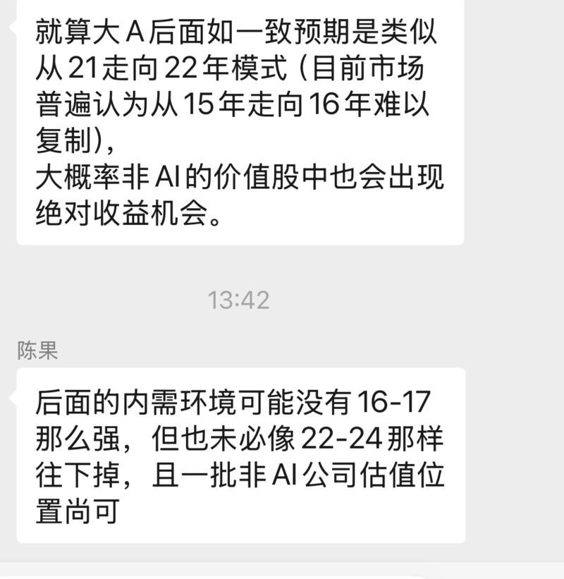
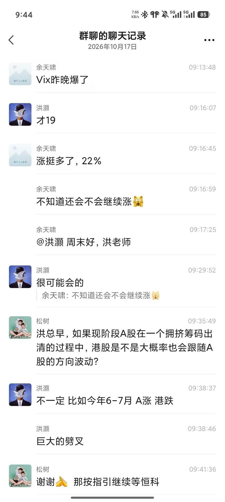

调研纪要 · 2026-10-17 新闻日报
星球 ID: 28855458518111 | 共 100 条帖子 | 精华 18 条
| 查看研究积累
强制同步到研究积累
全部 电子 计算机 医药生物 传媒 非银金融 有色金属 国防军工 建筑装饰 电力设备 其他 汽车 机械设备 轻工制造 通信 煤炭 钢铁 基础化工 宏观策略 社会服务 综合 环保 石油石化 公用事业
书签
国泰海通煤炭行业基本面数据库大全20261017
国泰海通煤炭行业基本面数据库大全20261017
——————————————
【动力煤：煤价上涨，库存涨跌不一】截至2026年10月16日，北方港市场煤情况：北方黄骅港Q5500平仓价1025元/吨，较前一周上涨26元/吨（2.6%）；黄骅港Q5000平仓价929元/吨，较前一周上涨27元/吨（3.0%）。截至2026年10月16日，秦皇岛库存590万吨，较前一周增加4.0万吨（0.7%）。截至2026年10月12日CCTD北方主流港口库存为3202.1万吨，较前一周增加25.1万吨（0.8%）；南方港库存3125.5万吨，较前一周减少59.7万吨（-1.9%）。
--------------------------------
【炼焦煤：煤价下跌，库存下降】截至2026年10月16日，京唐港主焦煤库提价（山西产）2440元/吨，较前一周持平；京唐港主焦煤库提价（河北产）2320元/吨，较前一周下跌70元/吨（-2.9%）。截至2026年10月15日，港口合计炼焦煤库存268.0万吨，较前一周减少7.1万吨（-2.6%）。
--------------------------------
【海外煤价】截至2026年10月15日，澳洲Q5500离岸价113美元/吨，较前一周上涨4美元/吨（3.2%）。截至2026年10月16日，澳洲主焦煤场地价2310元/吨，较前一周上涨20元/吨（0.9%）；俄罗斯主焦煤进口平均价1693元/吨，与上周持平；美国主焦煤场地价2180元/吨，较前一周上涨20元/吨（0.9%）。蒙古甘其毛都口岸焦精煤进口场地价1900元/吨，较前一周下跌65元/吨（-3.3%）；蒙古甘其毛都口岸焦原煤进口场地价1640元/吨，较前一周上涨10元/吨（0.6%）。
--------------------------------
国泰海通证券-煤炭行业基本面数据大全下载链接：
文件分享 ↗
--------------------------------
欢迎交流：
黄 涛 15805519458
邓铖琦 18813026922
刘兴华 13914310181
#日耗回升库存积累动力煤延续上涨、铁水暂温双焦震荡运行
#日耗回升库存积累动力煤延续上涨、铁水暂温双焦震荡运行
🎁【长江煤炭|本周行业数据更新1017】
【动力煤价格】截至10月16日，秦皇岛港动力末煤平仓价(山西产)为1028元/吨，周环比+3.0%；截至10月15日，澳洲5500大卡动力煤价格114.75美元/吨，周环比+3.1%，折合人民币含税到岸价1039元/吨；截至10月15日，国内外倒挂16元/吨。
【二十五省供耗存】截至10月15日，二十五省电厂日耗520万吨/天，周环比+10.8%；二十五省煤炭库存11990万吨，周环比+1.4%；库存可用天数23.1天，周环比-2.2天。
【焦煤】截至10月16日，焦煤价格(京唐港主焦煤)2580元/吨，周环比+6.6%；截至10月16日，终端焦煤库存合计(煤矿+焦化厂+钢厂+沿海5港)周环比+0.3%；截至10月16日，澳洲硬焦煤现货价291美元/吨，周环比-0.3%，折合人民币含税到岸价2199元/吨；截至10月16日，国内价格高于国外381元/吨。
【焦炭】截至10月16日，焦炭价格(日照港一级冶金焦)2030元/吨，周环比-4.7%；截至10月16日，终端焦炭库存合计(焦化厂+钢厂+沿海18港)周环比-2.5%；截至10月16日，全国独立焦化厂吨焦盈利-52元，周环比-53元。
—————————————
👥团队成员：肖勇/赵超/叶如祯/庄越/韦思宇/宋楚
[庆祝][庆祝]【财通建筑建材】玻璃产业链调研反馈
[庆祝][庆祝]【财通建筑建材】玻璃产业链调研反馈
[礼物]本周我们进行了沙河，山东，湖北的玻璃产业链调研，欢迎联系
[礼物]#浮法玻璃 需求端，本周调研反馈仍偏弱，26年的总体需求下降约10%，27年需求可能继续下降，但降幅可能收窄，短期看进入Q4旺季，下游提货有望边际好转，但对降库帮助仍有限。出口、制镜和深加工订单相对较好，但体量有限，更多是结构性亮点，难以扭转总量下行。供给端，全国在产日熔量约14万吨，后续产能退出的速度或边际放缓。厂家库存仍在30天以上，贸易商及期货仓单压力也不小；小线已退出较多，但剩余企业抗亏损能力更强，债务、保就业和冷修重启成本令停产决策偏慢，且部分停产并非永久退出，价格修复后仍面临复产压力。价格展望方面，沙河、湖北调研现货约850—900元/吨，多数企业现金流亏损约100元/吨；受访专家判断，短期价格仍围绕成本线波动，协同涨价难以持续，即使修复至盈亏平衡附近，也会受潜在复产制约，大幅上涨的难度较高。
[礼物]#光伏玻璃 需求端，受访专家预计2026年国内装机160—180GW，较2025年明显回落；机制电价落地后电站收益下降，四季度不再有传统抢装，仅可能季节性小幅改善。若电价和电站收益没有实质改善，2027年装机或维持150—200GW，电池功率提升还可能进一步降低单位玻璃用量。供给端，当前在产日熔量约7万吨，合理需求约6.5—7万吨/日，库存仍有40多天；行业已协调两轮减产，小企业基本停产、近期头部企业成为减产主力，后续大幅减产空间有限，海外本土产能扩张也在压缩国内企业的出口及海外盈利空间。价格展望方面，调研价格约10.2—10.5元/平方米，头部企业按完全成本每平方米亏损0.5—1元，提价至11元难度较大；有专家认为，约13元才能使较优二三线企业恢复盈利并增强复产意愿，因此短期价格仍以低位震荡为主，即使反弹也会受到闲置产能和下游接受度的约束。
周末好[太阳]再次推荐关注商社板块投资机会，出口与服务消费仍然高增，且红利股显著低估。
周末好[太阳]再次推荐关注商社板块投资机会，出口与服务消费仍然高增，且红利股显著低估。
#安克创新：公司品类/市场/渠道开拓加速，2026年归母净利35.7亿元/+40.1%；当前633亿元市值，对应2026E 约17.7倍PE，股息率2.2%。
#赛维时代：公司非服库存加速出清，叠加渠道扩张。预计2026年归母净利4.1亿元/+41.3%，2027年6.5亿元/+58.6%；当前88亿元市值，对应2026E 约21.5倍PE，对应2027年约为13.5倍PE，股息率2.3%。
#致欧科技： 预计2026年归母净利4.88亿元/+45.4%，2027年6.25亿元/+27.9%。当前84亿元市值，对应2026E约17.2倍PE，当前股息率0.95%。
#绿联科技： 预计2026年归母净利9.5亿元/+34.3%，2027年13.1亿元/+38.7%。当前180亿元，对应2026E约19.0倍PE，当前股息率1.4%。
#行动教育：校长EMBA团单化推动业绩提升+高派息凸显现金回报。预计公司2026年营收10.21亿元/+25.8%；归母净利4.05亿元/+26.6%。2026年约16.2×PE；预计全年分红比例在95%以上，按95%派息率测算，对应现金分红约3.85亿元、股息率约5.9%。
#学大教育：主业增长提速+全日制扩容释放利润弹性。预计公司2026年营收37.1亿元/+15.1%；归母净利3.19亿元/+63.8%。按最新市值约43.3亿元测算，2026年约13.6×PE。
#中国东方教育：高分红价值突出。预计公司2026年营收51.5亿元/+11.5%；归母净利9.0亿元/+19.0%。2026年约9.0×PE。按60%派息率测算，2026年现金分红约5.40亿元、股息率约6.6%；若按79%派息率测算，则现金分红约7.11亿元、股息率约8.8%。
#古茗： 预计26-27年经调净利润增速20%/15%，对应26-27年14X/12XPE，股息率4%
此外，【三峡旅游】3季度有望高增。【小商品城】【名创优品】【周大福】【百胜中国】性价比高。
【国联民生宏观】欧洲理事会：谈判获认可，防御再提速
【国联民生宏观】欧洲理事会：谈判获认可，防御再提速
☀️ 10月15—16日欧洲理事会落幕。北京谈判成果获得政治认可、贸易防御同步提速，欧盟在“保产能、保就业”上进一步加码：
✨ 首批成果确认，实施参数待落地。冯德莱恩确认北京磋商取得首批三项成果：调节中国混动车对欧出口、改善欧盟产品对华准入、提高稀土及永磁体出口许可的可预期性，但并未公布实施参数——方向已定，尺度未明。
✨ 贸易防御从原则表态进入行动阶段。成员国一面支持继续对话，一面要求“紧急”增补、有效使用现有工具。欧委会将于12月提出DiversifyEU与“团结机制”，并研究快速限制第三国产品入欧的新工具。汽车不是终点，化工、塑料、铁合金或成下一批重点领域。
✨ “欧洲制造”立法继续催办。会议要求加快《
工业加速器法案 ↗ 》谈判，拟将公共采购与公共支持与欧洲本地生产绑定。同时降低能源成本、延续临时援助、削减监管负担——贸易保护与产业扶持正形成闭环。
☀️ 混动车安排对总量的影响有限，欧洲仍是中国出口增长的重要来源。
✨ “向上安排”保留了出口空间。欧方披露的拟议首年35万辆、此后年增6%，高于去年实际规模、低于今年供货速度；金额缺口约占对欧货物出口的0.7%（完全停供的极端情景下1.7%）。总量成本可控是安排得以达成的前提，但车企在欧销量增速预期仍需下修。
✨ 整车受限≠电池退出，欧洲建厂与中国供货并行。宁德时代德国工厂已量产电芯；今年上半年，欧盟仍贡献我国锂电出口金额净增量约45%。欧洲电池厂多数材料与部件仍需进口、主要来自中国。
✨ 中方握有产业链筹码，欧方加码要付供应成本。中美交锋积累的管制、反制与许可执行经验，强化了中方争取对等安排的筹码；商务部15日重申“对等互利”，继续便利对欧稀土审批、希望欧方对等放行两用许可个案。供应依赖约束近期升级幅度，阶段性缓和与长期竞争仍将并存。
🪐风险提示： 谈判安排落实不及预期；欧洲贸易限制升级超预期；供应替代快于预期。
🔥燃机行业深度：AIDC基建打开燃机供需缺口，国内厂商迎突破机遇【浙商新兴产业吴婷婷/钟凯锋团队】20261017
🔥燃机行业深度：AIDC基建打开燃机供需缺口，国内厂商迎突破机遇【浙商新兴产业吴婷婷/钟凯锋团队】20261017
#核心观点：AIDC缺电及全球燃机供需错配下，国内燃机主机厂出海迎来黄金窗口。行业主线从远期空间叙事，切换至订单兑现与海外落地能力验证。
1️⃣受整机制造与核心零部件产能刚性约束，供需错配、交付滞后为当前燃机行业核心特征。
#全球燃机需求持续高增。2026年全球燃机新签订单规模预计突破100GW，强劲需求有望延续至2030年。
#头部企业新增产能难以在短期快速释放。当前全球核心主机厂年化可交付产能仅55–60GW，显著低于新增签约需求，头部企业（GEV、西门子、三菱重工）产能释放节奏偏慢，排产普遍至2029–2030年。
2️⃣国内主机厂迎出海窗口期，重燃技术+出海能力仍然稀缺。
#国内燃机企业由与外方合资到技术自研，已基本实现中小型燃机专利自主化。
#国内主机厂50MW以上重燃+出海能力仍然稀缺。【上海电气】拥有70MW-500MW产品矩阵，上海电气首台套燃机中标马来西亚500MW级联合循环项目，东南亚、南美洲、大洋洲可直接出口，北美市场可参与外协加工；【东方电气】拥有自研15-50MW燃机，80MW及200MW级别燃机处样机研制阶段；【中国航发】自研燃机覆盖1MW~110MW；【哈尔滨电气/中国动力/汽轮科技】自研燃机主要覆盖50MW及以下功率区间。
#投资建议：看好国内燃机主机厂出海机会，优选卡位重燃出海、自主机型技术突破等稀缺能力的标的。
#重点推荐：上海电气（国内唯一重燃出海主机厂）； 建议关注：东方电气，哈尔滨电气，中国动力等。
风险提示：全球云厂商AI资本开支不及预期风险；AIDC发电技术路线发生变更风险；燃机上游零部件产能扩张不及预期风险。
1017生益科技业绩超预期&金洲管道Q3落地，液冷积极表现🌞
1017生益科技业绩超预期&金洲管道Q3落地，液冷积极表现🌞
1️⃣#PCB产业链业绩持续喜人，#生益科技超预期，中枢利润33.78e，叠加Q4 M8-9放量加速&明年PTFE重新回归，公司Q4-明年业绩有望持续高增，继续看好PCB业绩确定性&技术升级确定性；同时生益科技产业链机会值得持续期待，生益放量加速@产业链相关HVLP—【德福科技】，碳氢树脂—【东材科技】【瑞丰高材】【呈和科技】，化学法硅微粉—【凌玮科技】【联瑞新材】，同时继续关注【华正新材】Q3确定性。
2️⃣#金洲管道液冷订单开始释放，截至Q3，公司项目一期建设进度优于预期，现已实现产品出货并进入产能爬坡阶段；一期投入设备基本已完成采购、安装及调试，二期、三期建设将结合市场订单情况分步实施。公司液冷业务采用 ODM/OEM 代工模式，已与行业优质液冷零部件客户（含台资液冷 T1 厂商）建立合作并实现批量供货。截至今日，液冷业务累计承接订单规模约 4900 万元，2026 年 9 月开票金额约 2261 万元，客户根据产能情况滚动追加订单。
生益科技业绩预告点评：涨价/AI双轮驱动，Q3业绩超预期
生益科技业绩预告点评：涨价/AI双轮驱动，Q3业绩超预期
[礼物]10月16日晚生益科技发布26年前三季度业绩预告，预计实现归母净利润64.6~68.7亿元，同比+164%~181%，扣非净利润61.2~65.3亿元，同比+157%~174%；26Q3预计实现归母净利润31.7~35.8亿元，同比+212%~252%，环比+49%~68%，扣非净利润32.1~36.2亿元，同比+221%~262%，环比+76%~98%，单季归母/扣非净利润均创历史新高，业绩超预期。
[礼物]公司业绩同环比高增主要系：传统覆铜板量价齐升，AI覆铜板出货量超预期，产品结构持续优化；PCB业务受益AI算力领域高景气，高附加值产品占比稳步提升；对外投资项目收益回报可观
[礼物]分业务来看：
1）CCL业务（非PCB）：26Q3预计实现归母净利润27.0~30.6亿元，同比+314%~369%，环比+58%~79%。
传统CCL：价的维度，年中快速提价于Q3报表体现，盈利能力快速提升。量的维度，5月起至9月，累计新增产能超100万张/月，产线稼动维持高位，销售规模进一步增长。
AI CCL：海外大客户主流料号全面配合，新一代计算平台量产，出货量持续提升，目前单月M7+8 AI类CCL出货已超100万张，同时公司跟随行业节奏进行提价，推动了Q3业绩的进一步释放。
2）PCB业务：子公司生益电子26Q3预计实现归母净利润7.6~8.4亿元，同比+30%~44%，环比+14%~26%，扣非净利润7.5~8.4亿元，同比+29%~43%，环比+13%~25%。PCB业务趋势良好，随着海外核心大客户新一代AI算力平台切换，产品价值量和盈利水平均有进一步提升，整体AI PCB订单维持高景气，吉安二期6月投产开始承接部分东莞订单，推动了东莞订单高端化升级，共同驱动业绩高增。
[礼物]公司作为内资AI CCL稀缺标的，积极扩充高阶产能，兼具格局优势和成长弹性，后续业绩仍有上修空间，我们看好公司未来的投资机会，此前已作为26Q4季度金股进行重点推荐，当前仍坚定看好！
裕同科技（10月金股）：iPhone Duo预售火爆，供应链跟随受益；液冷业务进入兑现期，包装主业奠定安全边际。（#预告：10.19周一晚8点，三季报解读电话会...
裕同科技（10月金股）：iPhone Duo预售火爆，供应链跟随受益；液冷业务进入兑现期，包装主业奠定安全边际。（#预告：10.19周一晚8点，三季报解读电话会）
[烟花]10.16日苹果iPhone Duo#全球预售火爆，10.23日正式发售，预计送到时间已排至27年1月。iPhone Duo国行起售价15999元，价值量显著提升，后续销售放量，供应链跟随受益。
[爱心]液冷业务：北美CSP大厂直供，台企合作同步推进。NV ZQD方案确定，华研凭借技术优势有望领先切入；26Q4有望出货、进入业绩兑现期，华研持股比例提高至85%，#27年业绩弹性可期。
[玫瑰]AI硬件：Meta、OpenAI全新AI硬件产品相继推出，端侧AI放量阶段有望开启。#公司为此类客户核心供应商，实现包装、软材料、结构件一体化供应，有望充分受益AI硬件增长。
[庆祝]其他N业务：切入AI服务器重型包装赛道，凭借海外基地+制造服务优势提升份额。基于核心大客户苹果的认可与合作深度，业务外延边界广阔。碳纤维材料小批量量产，后续有望放量。#目标未来3年非包装N业务收入利润贡献将持续提升。
[礼物]三季报电话会预告：#10.19日周一20:00
💻网络参会:
进门 ↗
☎️电话参会：
+86-4001668383（中国大陆）
+86-01053827136（全球）
+852-51089680（中国香港）
参会密码： 304158
[红包]重点推荐！【601858 中国科传】：国家数据集团即将挂牌成立，科传跃升为国家级知识数据要素产业核心标的！
[红包]重点推荐！【601858 中国科传】：国家数据集团即将挂牌成立，科传跃升为国家级知识数据要素产业核心标的！
#伴随国家数据集团近期正式挂牌落地，数据要素市场化改革进入全面加速阶段，中国科传作为国内规模最大的科研学术期刊龙头，坐拥海量权威学术文献与核心版权资源，成为国家知识数据要素确权、运营与商业化的核心承载平台，深度受益科技强国与数据要素产业双重政策红利。
#根据国家科技强国战略与数据要素改革整体逻辑，中国科传依托不可替代的国家级学术资源壁垒，未来有望通过“政策补贴落地”、“版权价值变现”、“国家级平台协同”等模式，全面打开成长空间。
[红包]#国内期刊补贴定向倾斜，下半年业绩确定性修复
国家此前针对科研人员订阅海外期刊设置专项补贴，当前科技强国战略下优化科技投入结构，逐步缩减海外期刊补贴、定向加大对国内高质量学术期刊的扶持力度。中国科传作为国内科研期刊出版龙头，旗下核心期刊数量与学术影响力均居行业首位，将直接承接国内期刊补贴增量，业绩端下半年有望迎来明确修复。
[红包]#AI版权商业化加速兑现，高毛利价值持续释放
当前流媒体AI短视频、AI问诊、医药研发等多元场景均需大量引用期刊文献、分子式等学术内容，对应的知识版权付费机制目前尚未全面普及。公司今年单季度AI相关内容授权收入已接近2亿元，且均为高毛利的数据服务收入；后续随着国家数据要素确权政策持续推进，学术内容版权付费规范化落地，公司手握的海量期刊版权资产将持续释放长期价值。
[红包]#国家数据集团深度协同，夯实知识数据要素核心地位
伴随国家数据集团挂牌成立，国家级数据要素运营体系加速成型。中国科传的海量学术文献数据是国家知识数据要素的核心组成部分，未来有望与国家数据集团在数据确权、知识数据交易、学术数据服务等领域开展深度协同，进一步强化公司在知识数据要素赛道的产业地位，打造国家级学术数据服务标杆。
[烟花]国家数据集团落地叠加知识版权确权政策持续推进，中国科传已不再是一家传统的科研期刊出版企业，而是国家级知识数据要素产业的核心标的，长期成长空间值得重点关注！
[太阳]【腾景科技】光通信继续放量，成长空间逐步打开
[太阳]【腾景科技】光通信继续放量，成长空间逐步打开
[庆祝]公司预告Q3营收3-3.2亿元，同比增长84.9%-97.22%、环比增长16.3%-24%，归母净利润4400-4800万元，同比增长61.68%-76.38%（剔除股权激励费用同比增长101%-115.7%）、环比增长23.4%-34.6%，扣非后归母净利润4300-4700万元，同比增长61.37%-76.38%、环比增长20.5%-31.8%。
[玫瑰]光通信继续引领增长。我们判断Q3高速光模块无源组件继续保持快速增长，同时OCS中钒酸钇晶体二期新增产能带来产量交付增加；同时在光通信产线大规模扩张下今年公司光测试仪器订单迎来爆发，对光通信业务贡献重要增量。展望Q4，上述增长动力有望延续之外，预计OCS准直器等新产品也将逐步量产，除交付液晶方案已有的准直器订单外，新方案如DBS所用的准直产品等预计也有望开启交付，带来新增亮点。
[拳头]公司受益光通信业务高增业绩已步入逐季向上明确趋势，公司也通过科创债等工具加速产能扩张，模块所用组件、光测试业务将持续受益，且展望光互联新技术，一方面OCS业务有望受益谷歌架构升级用量配比大幅提升、新增客户/新增场景部署，另一方面CPO领域也有望实现突破，公司有望持续打开成长空间
晶科能源：业绩大幅减亏，储能盈利转正
晶科能源：业绩大幅减亏，储能盈利转正
事件：晶科能源发布2026年前三季度业绩预告的自愿性披露公告，2026Q1-3公司实现归母净利-29.76~-35.76亿元，扣非净利为-38.11~-44.11亿元；据此测算，2026Q3公司实现归母净利-5~1亿元，扣非净利为-4.5~-10.5亿元。
1、晶科能源2026Q3减亏明显，主要为高效产品占比提升（Q3公司组件出货15GW+，高效产品占比约65%-70%）、美国出货进入旺季（Q3季度预计出货800-900MW）、储能扭亏（Q3确收规模预计在1.7-1.8GWh）所致，此外政府补助亦有一定正向贡献。
2、展望后续，随着公司高效组件以及海外高溢价市场出货规模的提升，业绩有望逐步改善。1）光伏方面，公司产品效率行业领先，年底有望具备超40GW的TOPCon3.0产能（满足一级能效标准），高功率产品的年化产能规模行业领先，贱金属工艺改造进一步降本增效。2）储能方面，2026年系统交付有望超10GWh，核心零部件自研量产能力增强，逐步贡献正的利润贡献。
北方华创：拟收购诺合键维，强化3D集成布局
北方华创：拟收购诺合键维，强化3D集成布局
⭐️诺合键维主营混合键合设备，已获得重复订单
全资子公司北方华创微电子拟以现金方式收购诺合键维100%股权，标的公司主营混合键合设备，出厂设备实现纳米级精度对准，#已获得重复订单。#北方华创26H1已发布两款混合键合设备并取得批量订单，本次收购进一步强化混合键合能力。诺合键维25年营收1918万元，25/26H1净利润分别亏损3980/942万元。
⭐️#混合键合为先进封装下一代核心技术，高端市场市占率持续提高
逻辑端，Chiplet与3D IC要求互连间距继续突破，传统微凸块已触及物理极限；存储端，HBM和3D NAND堆叠演进，微凸块逐渐无法满足厚度与翘曲控制。因此，相比焊料微凸点，混合键合间距更小、路径更短，#在高端堆叠中的占比有望持续提高。#全球龙头Besi在26Q1混合键合系统订单环比增长超过1倍，26Q2全业务订单已增至2.9e欧。
免责声明：信息材料根据公开数据整理
☎️
免责声明：基于公开资料整理，可能存在信息滞后或更新不及时，任何情况下不构成投资建议
「图片」
「图片」


2 图
黄仁勋谈AI市场震荡 “这一切都会过去”
黄仁勋谈AI市场震荡 “这一切都会过去”
Anthropic 在最新芯片融资中向黑石提供两位数收益率
Anthropic 在最新芯片融资中向黑石提供两位数收益率
中国多地政府暂停低空经济财政补贴
中国多地政府暂停低空经济财政补贴
过去七天，费城半导体指数下跌超过 12%，逆向交易者估计已累计获得 320 亿美元的账面总收益。
过去七天，费城半导体指数下跌超过 12%，逆向交易者估计已累计获得 320 亿美元的账面总收益。
摩根士丹利预计，ABF基板价格将在2027年至少上涨25%，供应短缺将持续到2030年。
摩根士丹利预计，ABF基板价格将在2027年至少上涨25%，供应短缺将持续到2030年。
新产能直到2028-2030年才会逐步释放，这将限制短期内的供应缓解。
海外AI叙事变化（简版）
海外AI叙事变化（简版）
一、旧叙事（2022-2026H1）三条公理：
① 算力永远不够，需求无限
② 云厂商现金流充足，债务融资只是补充
③ 买AI=买芯片光模块，卖铲人逻辑永续
二、10月以来五条裂缝：
① OpenAI收入口径暴雷（500亿vs预期700亿）
② Anthropic月增速从33%骤降至个位数，IPO估值从2万亿砍到1.5万亿
③ CoreWeave债券收益率15%+、CDS爆表，AI叙事从估值层传到信用层
④ 巨头CEO集体转谨慎：陈福阳"投资者如赌徒"、陈立武"ROI是核心挑战"、扎克伯格承认2000亿是盲注
⑤ 长鑫存储技术突破，存储从"永续短缺"变"有竞争者的周期品"
三、叙事重心四次迁移：
算力叙事→融资叙事（今年发债6000亿，现金流转负）→回报叙事（顶级模型使用占比从55%跌至14%，Gartner测算基建投入10.3万亿vs收入3.55万亿，缺口4.9万亿）→智能体应用叙事接棒（Meta Muse、推理时代CPU重估）
四、多空对峙核心：
共识是需求真实、分歧在"谁付钱、何时收回"。风险不在AI证伪，而在2027年4.9万亿融资缺口遇上2000年以来最大股权供给潮。
五、对A股映射：
海外映射链（光模块/CPO/存储）被杀最狠；中国AI相对受益（Token消耗全球第一、成本低、DeepSeek上市在即）。盯三个拐点：美债10Y是否随AI信用事件回落、11月Anthropic IPO定价、10月下旬美股财报资本开支指引。
CXMT 4F²：长期前景光明，短期业绩面临挑战
CXMT 4F²：长期前景光明，短期业绩面临挑战
1. 精确的密度增益
与传统的 6F² 相比，4F² 在相同的工艺节点下可实现约 30% 更高的内存密度。这种提升并非源于晶体管尺寸的缩小，而是通过将 DRAM 存储阵列、逻辑阵列和电容器垂直堆叠，以牺牲三维布局为代价，换取单位面积的容量。
2. 性能损失极小——成本体现在产量上
根据目前已验证的结果，4F² 并未表现出明显的性能下降；主要风险在于良率损失。换句话说，这是一种“以良率换取密度”的方案，而非“以性能换取密度”的方案。
3. 它与节点推进相比如何
· 在正常迭代情况下，下一个节点（G5 与 G4 相比）性能提升约 21%；
· 在同一节点上采用 4F² 可使密度再增加 30%；
· 因此，落后一个节点但拥有 4F² 的产品实际上可以实现跨越式发展：G4 + 4F² 在性能指标上可以比 G5 领先约 13%——这才是真正的“节点级威胁”转折点；
· 相反，G3 + 4F² 仍然明显落后于 G5——它只是缩小了密度差距，还没有构成威胁。
4. 节点越高级，4F² 就越难。
将 4F² 工艺引入 G3 和 G4 相对可行； 但 G5 工艺需要四重曝光，其难度比 G3/G4 高出 30% 以上，甚至可能高达 45-50%。 挑战贯穿整个工艺流程——光刻、刻蚀、沉积、离子注入。这本质上是一个全流程问题，而非单一步骤的问题。
5. 如果没有 EUV，G5 + 4F²就是上限。
如果 EUV 问题无法解决，DUV 多重曝光是唯一选择，那么 G5 层 4F²的工艺水平大致就是技术极限。理论上，3D DRAM 也可以用 DUV 多重曝光技术制造，但“可以制造”和“具有商业价值”是两回事 ——如果良率比竞争对手低 20-30%，那么性价比优势就会荡然无存，有效的竞争也就无从谈起。
6. 4F²的另一项战略价值：延长 DUV 航线的使用寿命
4F² 的一个目的是在不不断缩小线宽的情况下提高整个电路层的密度，使制造商能够在现有工艺技术的基础上继续保持竞争力——有效地为 DUV 工艺争取了更多的时间。
7. 三星“已完成但尚未发布”的 4F² 的真实状况
三星已完成 16nm 和 17nm 工艺的 4F²技术研发，但认为 14nm 和 12nm 工艺仍需进一步验证，因此有意推迟发布。其逻辑是“先在多个制程节点上进行验证，再推出更可靠的产品”，而非技术尚未成熟。 这意味着三星的 4F²技术成熟度高于外界预期。
8. 发布节奏和流程路线图
三星的最终目标是在其所有产品线中全面采用 4F² 技术，逐步从 16nm 过渡到 14nm 再到 12nm。在 10nm 制程范围内，最先进的节点是 ~10nm D1γ，目前仍在同步开发和试验阶段。 低于 10nm 时，纯粹的工艺微缩将变得异常困难且成本高昂，良率也会明显下降，因此采用 4F² 叠层技术势在必行——它最终肯定会被广泛应用。
9. 为什么“不急于推出”——成本效益考量
三星能够在 16nm 工艺上实现 4F²技术，但却尚未出货，这表明在现阶段，通过推进制程节点来提高 DRAM 密度才是更具成本效益的做法。4F²技术看起来更像是 10nm 以下工艺的储备方案，而非目前的主要发展方向。
10. 三星如何确定其研发优先事项
三星的研发重点更倾向于纯 3D DRAM（一种 3D 电路层结构），混合键合技术仅作为一种过渡方案，而非最终目标。3D DRAM 还需要大约 2-3 年的时间才能成熟，而这段时间正是混合键合技术得以延续的关键所在。
11. 三星特定的 3D DRAM 实验参数
三星目前正在进行 16nm D1z 工艺的 3D DRAM 试验，未来可能会升级到 14nm 工艺。其层数正朝着数十层发展——目前大约可以实现 20-30 层电路——并且层数还在不断增加。这一水平仍然远超中国大陆的竞争对手。
12. 三星对 4F²竞争格局的解读
理论上，所有厂商的 4F²架构基本相同（核心都是垂直排列逻辑阵列、存储阵列和电容）。工艺上的细微差别固然存在，但由于目前还没有任何产品经过大规模市场验证，现在断言哪种工艺最佳还为时尚早。 三星并不担心 CX 的发布——CX 采用的是 G3 工艺，其性能和密度都无法对三星、SK 海力士或美光构成威胁；只有当 CX 能够将 4F²工艺应用到 G5 工艺时，才会真正构成威胁。
13. 目前仅限传统 DRAM
HBM 需要预留大量的电路面积用于 TSV 和微凸点，而 4F²目前的面积不足以完成这种设计。因此，短期内只能使用传统的 DRAM——向 HBM 的过渡还需要 1-2 年的时间。
14. HBM 的硬性前提条件：80% 的产率
无论是 4F²还是传统 DRAM， 芯片良率必须至少达到 80%才能适用于 HBM；低于 80%，转换难度极大。 所以，正确的做法是“先在成熟的 DRAM 上验证良率和性能，然后再谈 HBM”。
15. 三星和 SK 海力士都尚未将混合键合技术应用于 HBM。
目前，三星和 SK 海力士都没有将混合键合技术应用于 HBM——这一点外界经常误认为“混合键合技术已经应用于 HBM”。
📑📌高盛 - weekly mash
📑📌高盛 - weekly mash
💡为了提炼本周叙事演变的核心，我想引用我们信用研究团队的一句话：
💬“我们认为，由新型云服务商（neoclouds）发行的 AI 相关公司债，以及与前沿 AI 实验室存在敞口的公司债，正处于融资成本争论的震中。”
📈我认为，这精准解释了过去四天股票市场走势的驱动因素。在价格具有反身性的市场中，区分因果关系未必总是有帮助，不过，我认为有两个催化因素直接引发了本周最剧烈的价格波动：
🔹1. 据《
金融时报 ↗ 》报道，CoreWeave 联合创始人 McBee 表示，保险资金所能提供的资本没有上限，甚至可以说全世界的钱都在那里。
🔹2. 市场围绕前沿 AI 实验室的商业模式定义及其演变、经济效益，以及闭源模型与开源模型之间的竞争格局，展开了更加深入且紧迫的讨论。
🔍关于第二点，未来几周相关讨论很可能变得更加聚焦、更加透明。因此，在此之前市场出现一定波动，并不令人十分意外。随着讨论推进，市场也将不断调整对资本开支强度和融资需求、信用质量和支出受益者的预测。更重要的是，市场将反复评估：在 AI 时代，经济价值究竟由谁、又在哪些环节获取。
⚠️鉴于固定收益市场的趋势在本周出现了至关重要的转折，人们很容易把 AI 叙事的演变外推为二元结果发生了根本改变，但这样做是错误的。正如我们在讨论资本开支增长和盈利增长时多次强调的那样，二者的二阶变化 —— 即增速 —— 很可能会从这里开始放缓；但AI 发展与投资这一超级主题依然完好无损，这一点也得到了下方新闻标题的印证。
📊结合本文后面关于动量的评论与图表，现在已经很难再说，市场价格尚未广泛计入资本开支和盈利增速放缓的预期。然而，尽管市场一直在深入审视和寻找算力需求放缓的迹象，却根本没有发现任何相关证据；算力价格同样没有出现放缓迹象。
🗣️事实上，在本周这场争论愈演愈烈之际，我不禁再次想到 Sarah Friar 一个月前在我们会议上的发言：
“这份工作最难的部分，是预测一种全世界从未见过的业务 —— 评估网络安全和各个垂直行业等机会的规模，倒推出所需的算力，并提前两到三年动工建设。过去两年里，我们因为投资过度而受到批评，但这些投入今年确实获得了回报。最棒的是，我一年前买下的算力，如果今天拿到市场上出售，价格可以达到当时的 3 至 5 倍。所以无论如何，这都是一笔非常好的投资。坏消息是，我们现在仍然缺少算力，因此我当初本应该买得更多。”
📌与此同时，我仍然坚持过去几周的观点：随着三季度财报季推进，最大的 AI 支出方极有可能开始展现市场热议已久的投资回报率；它们将继续证明自己有能力主要依靠自身资金支持支出计划，同时也会表明，与前述价值由谁获取的争论相比，它们相对不受相关波动影响。
📝照搬上周的表述就是：
“市场领导地位将从 AI 支出的受益者，转向那些最大的 AI 投资者 —— 后者正在开始兑现市场期待已久的投资回报。”
🌊尽管本周的叙事波动荒谬至极，这一轮切换仍在发生，而且正在形成突破。
✨在这个繁忙周末来临之际，简要谈五点，并附上几张图表：
🔹1. 价格走势非常重要。即使债券上涨的原因并非股票投资者原先所预期或希望看到的 —— 推动因素是经济增长走弱和 / 或融资事故的威胁，而不是通胀消息，甚至是在通胀消息不利的情况下 —— 债券仍然上涨，并终结了此前开始主导市场的急剧抛售。
🔹2. 我认为，在 CPI 和 PPI 数据公布后，债券未能进一步下跌，随后收益率又在周四向下突破，表明此前未曾显现的疲态已经出现。
🔹3. 同样，不要忽视股票指数表面之下的价格表现：纳斯达克指数周三可能下跌了 1.5%，但剔除 AI 板块后的标普 500 指数以及欧洲股市均录得上涨，相对纳斯达克 100 指数跑赢逾 200 个基点。
🔹4. 如果你此前没有留意，我们周一已将未来 12 个月的债券评级上调至 “超配”，《让信用重归平衡：债券正逐渐从逆风因素转变为对冲工具》。
🔹5. 预计市场仍将持续关注利率，因为能源价格压力并未出现类似的向下转折。
📉自二季度末以来，各类动量 —— 包括价格、仓位和情绪 —— 都突然转为负面。正如经常发生的那样，钟摆很容易摆过头。二季度末，市场对 AI 不加区分的热情确实过于高涨；但现在很可能已经向相反方向摆得太远，明显偏离了更加现实的基准情景。
🔎目前，对新型云服务商信用状况的悲观看法很可能正处于这一现象的中心。不过需要再次指出，这种悲观已经非常明显地反映在价格、仓位和情绪之中。
📋从我们的 Prime 业务表现数据来看：
亚洲基本面多空策略本月下跌 7%，年初至今上涨 16%，而 6 月份时年内涨幅一度达到 40%；
TMT 多空基金经理本月至今下跌 5%，年初至今上涨 12%，低于 6 月份的 24%；
全球基本面多空策略本月至今下跌 2%，年初至今上涨 10%，低于 6 月份的 17%；
欧洲多空策略本月至今基本持平，年初至今仍上涨 8%。
📉全球 AI 股票 —— 以我们的 GSXGLAI 指数成分股为代表 —— 已经连续第六个交易日遭到抛售。过去六个交易日累计减仓幅度之大，是 ChatGPT 发布以来我们所见过的最极端情形之一。
📈过去三年半，“AI 赢家” 相对于 “AI 风险股” 一直是一笔走势非常清晰的交易。今年 6 月底，当该策略年内涨幅超过 90% 时，其趋势发生逆转，此后涨幅已缩水一半。股票动量因子的表现也是如此。两者都曾在 9 月尝试反弹，但目前正在重新测试低点。
🔍既然价格走势十分重要，同时考虑到 9 月份反弹之后市场正在重新测试低点，CoreWeave 一直是许多看空逻辑的核心。该股目前正在测试 7 月份低点，因此值得关注的是，在整体科技股疲软的背景下，它下周是否会进一步向下突破。
📊本周，当市场对 AI 的担忧达到高潮时，剔除 AI 板块后的标普 500 指数当天反而收涨。从这一角度来看，各细分板块过去五个交易日的涨跌榜很有意思。
💹鉴于市场当前高度关注融资需求与公司债发行，我对于今年和明年的美元投资级债券及高收益债券发行规模预测竟然如此温和，感到有些意外。
📈股票供给将如何影响 2027 年的市场表现，势必会成为热门议题。
🔹一方面，如果把即将到期的限售期也计算在内，明年美国公开股票市场的净供给量很可能创下 2000 年以来的最大增幅。
🔹另一方面，发行规模仍将远低于市场总市值的 1%。在整个 20 世纪 90 年代直至 2022 年以前，这一比例曾长期大幅高于当前水平，却从未阻碍整体股指上涨。
💡我对此的看法没有改变：20 世纪 90 年代已经清楚表明，只要市场相信股票发行所得资金将被用于具有生产力的投资，即使股票供给处于高位，也不会妨碍价格继续上涨。所需信息都可以在 Ben Snider 的最新报告中找到。
🚗对了，埃隆刚刚展示了一辆飞行汽车！
🙂祝大家周末愉快。
📑野村‑中国医疗健康：出口管制目录更新‑无需过度担忧
📑野村‑中国医疗健康：出口管制目录更新‑无需过度担忧
📢商务部与科技部发布第 48 号技术出口管制公告，本次出现新变动。
📅10 月 16 日，中国商务部、科技部发布 2026 年第 48 号公告，就修订后的《
中国禁止出口限制出口技术目录 ↗ 》向社会公开征求意见。
📝本次修订新增 40 项技术，覆盖人工智能、生物医药、太阳能领域，其中包含 14 项禁止出口技术、26 项限制出口技术。
🧬生物医药板块共计新增 5 项技术，涉及细胞与基因治疗（CGT）、小干扰 RNA、病原微生物相关技术；管制重点聚焦专有工艺平台、专有靶点发现与验证的所有权转让。
🤔我们认为本次管制不会影响当前主流对外授权交易。
🌐我们判断，对当下中国跨境分子对外授权业务带来的影响有限。管制仅针对基础平台所有权转让、未公开全新靶点的转让，这类情况在过往对外授权交易中本就比较少见，并不针对单分子 / 多分子对外授权、联合开发、CRO 服务等主流合作模式。
✅另外，不涉及所有权转让的对外授权、CRO/CDMO 服务、特定候选药物常规研发及合规相关技术，被明确排除在管制范围之外。
🎯由于规则边界清晰，正常商业业务获得明确豁免，我们认为中国制药与生物科技公司的长期全球化发展路径基本不受破坏。
📑OCP 全球峰会光子技术要点
📑OCP 全球峰会光子技术要点
📝一整天围绕光子技术的专题讨论，进一步印证了光互联技术的重要地位。
📅2026 年 OCP 全球峰会进入第三天，会议设置了全天光子技术专题研讨环节。
👥英伟达、Meta、微软、甲骨文、博通、天弘、Arista、Ciena、安费诺、Lumentum 以及华为等行业公司代表均发表了相关观点。
📋我们将核心结论整理如下：
🎤当主持人向行业头部参与者提问，各家公司会选用 CPO 还是 NPO 方案时，几乎全部公司给出的答案是 “两者都会采用”。
🔗AI 算力密度高度依赖光互联技术，在本次光子技术专题日的各个分会场当中，光互联的重要性都得到充分强调。
📊新型光学技术的五大关键指标：1）性能、2）功耗、3）成本、4）部署落地速度、5）可靠性与可维护性。
💡华为认为，NPO 方案在可维护性、开放解耦、可用性以及行业落地实施层面具备优势。
📈Scale‑in 是另一项可以提升 AI 算力密度的全新技术路线。
⚠️CPO 失效问题的根源：83%‑85% 故障来自 ELS 问题，11%‑17% 故障来源于光纤 / 连接器；灰尘污垢也是高频故障诱因。
⚖️光互联对比铜缆：全光 Pod 架构面向加速器规模大于 576 个的扩容场景；加速器数量处于 72‑576 台区间时，光互联与铜缆将会共存。
📑解读长鑫存储 4F² 技术公告及其对三星电子、SK 海力士的影响
📑解读长鑫存储 4F² 技术公告及其对三星电子、SK 海力士的影响
📅10 月 10 日，中国 DRAM 公司长鑫存储有关名为 “4F²” 新型存储单元架构的技术进展消息对外披露，该公司总裁给出积极表态，计划在 2026 年底前推出基于 4F² 架构的全新服务器内存产品。
📉自消息披露之后，主要存储供应商的股价出现下跌，包括三星电子、SK 海力士、美光、闪迪、铠侠以及长鑫存储，跌幅区间在 11%‑26%，存储板块合计市值蒸发规模远超 7000 亿美元。
🤔我们认为，本次股价下跌也存在其他驱动因素，例如信贷与人工智能融资层面的担忧、高于市场预期的 CPI 数据等。佐证在于，长鑫存储自身股价同样出现下跌，和该技术关联度较低的 NAND 供应商铠侠、闪迪同样出现大幅股价回撤。
📈除此之外，作为 DRAM 市场情绪风向标，DRAM 现货价格在同一时间段内延续上行趋势。
🔍尽管如此，本报告将分析长鑫存储公布的 4F² 技术，对比长鑫存储与三星电子、SK 海力士之间的技术、产能水平，研判该消息有多少已经被市场价格所消化。
💡核心结论：虽然对该技术取得进展保持一定程度的担忧具备合理性，且产能差距正在收窄，但双方仍然存在显著技术鸿沟，在先进节点 DRAM 以及 HBM 高带宽内存领域差距尤为突出。
📊存储板块个股近期大幅回调，这或许意味着市场此前低估了来自中国的产能爬坡速度以及技术突破的潜在可能性。
✅我们认为产能快速爬坡这一点符合现实；
⚠️但针对技术突破，我们判断市场实际存在高估。完成客户认证、实现高良率大规模量产、缩小 HBM 这类先进 DRAM 技术差距，都需要耗费漫长时间。
💹当前三星电子 2027 年预期 / 2028 年预期市净率估值分别为 1.2 倍、0.9 倍；SK 海力士 2027 年预期 / 2028 年预期市净率估值分别为 1.4 倍、0.9 倍。
📉部分个股估值已经低于账面净资产，代表市场已经在定价 2028 年行业下行周期，相比我们 “高景气维持更久” 的判断，市场情绪要悲观得多。
✨因此从基本面角度看，三星电子与 SK 海力士当前估值下风险收益比具备吸引力，但我们同时认识到，至少在短期层面，能够推动股价快速修复的催化因素较为有限。
📄特斯拉：一切皆有可能
📄特斯拉：一切皆有可能
🚗新款特斯拉 Roadster 充分展现了工程实力：0‑60 英里加速不足 0.6 秒、最高时速超 230 英里、风扇式下压力系统，搭配 SpaceX 推进器，真正可以实现飞行。该车型短期对销量以及每股收益带来的影响大概率微乎其微，但作为彰显特斯拉工程实力以及和 SpaceX 技术跨界融合的标杆产品，它的影响力不容忽视。
💬“成功并非板上钉钉，但足够令人振奋。”—— 埃隆・马斯克
👀我们仍在斟酌如何描述刚刚见证的 Roadster 发布会。火箭版车型 0‑60 英里加速用时不到 0.59 秒，最高时速超过 230 英里；搭载风扇吸附系统，能够让车辆倒置悬挂；具备紫外线防护与低温防护能力，可实现静电耗散；同时配备 SpaceX 研发的冷气推进器，可支持向前、向上加速，还能够实现侧向旋转。没错，这款车可以飞行。该车计划于 2028 年投产。
🤔诚然，现阶段这款可飞行 Roadster 在地面场景下的实际应用场景十分有限，但这并不是重点。这款产品的核心意义不在于短期销量，而是去诠释一切皆有可能，不断突破物理、工程以及创新的边界。特斯拉与 SpaceX 之间的技术跨界融合十分明显（由亚当・乔纳斯负责相关研究）。这款产品能否取得商业成功仍有待观察，但作为一份工程野心的展示，它足够令人印象深刻。
📈随着自动驾驶出租车业务与传统汽车业务执行能力持续改善，我们对特斯拉 2026 财年第三季度财报的看法转向更为乐观，这也为公司长期发展逻辑提供了更强支撑。
🚕特斯拉在奥斯汀快速扩大 Cybercab 自动驾驶出租车的运营规模，仅 30 天内车队规模就扩大至原先的八倍，车辆数量突破 300 台，无人工干预行驶总里程突破 100 万英里，这代表着公司朝着商业化运营迈出实质性的一步。
⛽与此同时，连续两个季度汽车交付量超出预期，背后得益于油价走高以及全自动驾驶功能渗透率提升。
⚠️不过较高的资本开支、短期现金消耗以及偏高的估值水平，可能会限制公司短期股价大幅跑赢大盘的表现；但目前业务落地推进情况开始逐步匹配部分长期发展目标，财报窗口期的投资布局吸引力有所提升。
📢Global Chemicals Webcast Highlights（全球化工线上研讨会要点）
📢Global Chemicals Webcast Highlights（全球化工线上研讨会要点）
🤝本次 10 月全球化工线上研讨会结束后，美国化工行业负责人 Vincent Andrews 以及中国化工行业分析师 Kaylee Xu 参与会议，我们整理出核心观点与关键结论如下：
🌍（1）中国化工产品出口仍保持上行态势，不过增速逐步放缓。中国化工行业开工率环比整体维持稳定，乙烯裂解装置开工率平均约 80%，该水平依旧低于 2 月份约 85% 的数值。受中东地区持续供应扰动影响，乙烯价格近期迎来一轮上行；但下游部分产品价差承压，包含 MDI，压力来源于原料成本走高。国内库存水平同比依旧处于低位，多条产业链仍处在去库阶段，企业对补库持保守态度，这大概率是受高价格环境以及国内终端需求偏弱的影响。8 月中国化工出口环比回落，但同比依旧走高。中国研究团队预计出口上行趋势会延续，不过上涨幅度会受地缘政治冲突以及对应的价格、价差走势影响。
🌾（2）农业板块 —— 科迪华、Vylor（看多），Nutrien（看多）；氮肥板块观点更为谨慎（CF Industries、雅苒 —— 看空）。当前农业前景的一大核心主题为厄尔尼诺现象。截至目前厄尔尼诺尚未造成实质性负面影响，巴西二季大豆播种进度高于历史同期水平。播种周期提前可能带来收获期提前，也会提升二季玉米及时完成播种的可能性，玉米作物将拥有充足生长时间，存在超预期向好的机会。即便如此，天气变化具备高度不确定性，到 2027 年北半球春季，厄尔尼诺依旧有可能对拉美、南亚及东南亚的作物生长造成实质性冲击，南亚东南亚地区的季风降水已经低于历史均值。
从投资角度看待农业板块，美国研究团队看好 Vylor。它是差异化复配企业，属于为数不多纯粹聚焦种子业务的公司；对比欧洲广义工业化工公司，它盈利表现防御属性更强，小麦业务、基因编辑等新增增长赛道还能带来潜在上行空间。虽然自 10 月 1 日分拆之后该股已经上涨 17%，属于市场普遍看多标的。科迪华的投资逻辑在于市场预期较低，仿制药带来的挑战已经被充分认知并反映在股价当中，市场也并未重点关注它的研发管线。
肥料板块当中，氮肥前景偏向悲观，对应 CF Industries 与雅苒两家公司，背后有三点原因：①中国出口规模抬升，2027 年出口端或带来进一步供给压力；②当前天然气价格处于高位，但 2027 年上半年过后价格大概率回落，成本曲线随之走平，最终走势取决于液化天然气供给情况；③中东冲突、霍尔木兹海峡供应扰动问题存在缓和的可能性。不过以上三点因素均存在不确定性，且在一定程度上相互关联。Nutrien 同样有氮肥业务敞口，但美国研究团队认为市场股价已经充分计入盈利回归常态的预期，相比 CF Industries，Nutrien 的估值吸引力更高。
🧪（3）蛋氨酸价格面临进一步下行压力。中国研究团队判断，伴随大量新增供给落地，年末蛋氨酸价格或将承受更大压力。蓝星安迪苏 15 万吨蛋氨酸装置建设已经接近完工，很快会进入试车阶段。新入局企业凌盛年末也计划逐步释放全新 20 万吨新建装置产能。两套装置合计将拉动全球蛋氨酸产能提升 14%，大幅高于全球约 3% 的需求复合年均增速。我们认同该判断。鉴于蛋氨酸行业前景黯淡，我们近期下调了赢创 2027 财年盈利预测，我们测算的 2027 财年调整后每股收益较市场一致预期低 10%。可参阅我们的报告《饲料行业利好消退，2027 财年每股收益风险显现》。
🚀（4）航天业务对比工业气体业务。长期来看航天赛道市场空间可观。林德、液化空气分别设定目标，到 2030 年航天相关业务规模要突破 10 亿美元、18 亿欧元，以此支撑公司内生增长目标。但需要区分航天总体潜在市场规模和航天可服务市场规模：部分航天领域企业选择垂直整合，自建空分装置；也有部分企业采用自建装置 + 和工业气体公司合作项目的混合模式。工业气体公司布局现场制气项目也需要有所取舍，超额利润通常来源于商品市场，而该模式仅在工业化地区可行，也就是要有足够多商品采购方消化现场制气装置的富余产能。
📌中国电池材料：产业链实地调研：旺季不及预期，下调 10 月排产预测
📌中国电池材料：产业链实地调研：旺季不及预期，下调 10 月排产预测
📰ZE 咨询下调了此前对于 2026 年 10 月的排产预测，其预计头部五家电池公司的排产环比提升 1%，此前预览预期为环比提升 7%。
📉本次下调主要源于宁德时代、亿纬锂能以及瑞浦兰钧排产预测的下调。
⚠️10 月本应属于行业旺季，但整体 10 月排产不及预期，此前市场预期 10 月或将出现赶产的情况，目前该预期已难以实现。
🔎我们认为这印证电池终端需求已经显现出部分走弱迹象。
📊我们预计，2026 年 10 月电池行业排产预测下调，会进一步加剧市场对于电池需求的担忧，电池产业链的负面市场情绪或将在短期延续。
📑摩根士丹利研究｜中国金融｜调研纪要：审慎配置金融资产，2027 年一季度重点关注保险
📑摩根士丹利研究｜中国金融｜调研纪要：审慎配置金融资产，2027 年一季度重点关注保险
😃本周早些时候，我们在上海走访多家金融公司。银行方面预期，居民资产配置会持续向保险、投资类产品倾斜。2026 年第三季度净息差与非利息收入表现向好，预计 2027 年一季度保险销售会迎来新一轮推动，这也支撑我们看多相关板块的观点。
详细调研要点
🧾居民金融资产再配置稳步推进，仍具备增长空间
💰存款依旧是新增资产管理规模的主力。交通银行表示，零售新增资产管理规模当中 70% 依旧流向存款，说明居民资产从存款向其他投资产品迁移的过程是渐进式的。值得注意，交通银行提到新增零售存款当中 50% 为定期存款，其中又有 50% 存期达到三年及以上，对应收益率约 1.5%。
📊证券结算余额是非存款品类当中增速最快的板块，反映个人投资者参与权益市场的意愿高涨。
😐居民选购金融产品的需求，集中于固收 + 基金（公募基金、银行理财产品均包含在内）、存款、量化策略产品。这类产品共同特征是收益相对稳定，整体来看居民风险偏好依旧保守。银行渠道代销的投资产品，依旧以中低风险公募基金、银行理财产品为主，市场对高波动产品接受度有限。
🤓伴随地方政府融资平台债务处置，高收益非标资产供给变少，银行理财管理人越来越多依靠权益仓位、北交所新股打新、可转债增厚产品收益。理财产品加大对债券基金的配置，也带动公募基金的资产管理规模扩张。理财产品收益率大约 2%，对比三年期存款利率 1.55% 具备吸引力。
📈交通银行私募证券基金的销售当中，量化基金占比达到 80%，但银行判断量化基金渗透率已经接近见顶。站在全市场口径测算，过去一年私募证券基金资产管理规模增量当中，量化基金贡献占比约 30%‑40%。
🛡️保险依旧是重要长期配置方向，尽管佣金改革落地，银行依旧保留保险分销的激励机制。
🏙️居民资产管理规模增长的驱动力，正从一线城市向非一线城市转移。国有银行上海地区零售存款增速弱于全国平均水平。浦发银行提到，部分中部工业实力较强城市增长表现亮眼，县域、农村地区产业升级带来新机遇。我们认为这是积极信号，代表近几年产业升级带来普惠性红利。
💎交通银行另外提到，资产管理规模 50 万元以上的富裕客户、高净值客户是增长最快的客群，今年资产管理规模实现双位数增速。
💵贷款定价稳定，带动净息差环比修复
👍我们访谈的国有银行预期，在资金成本持续下行的助力下，2026 上半年的净息差走势会延续。交通银行明确指出，2026 年第三季度净息差将继续企稳改善。
🛡️零售信贷风险可控，整体符合预期
😔交通银行表示，新增投放贷款资产质量改善，带动零售不良生成速度放缓；不过 2023、2024 年投放的存量业务，依旧是信贷质量恶化的主要来源。
⏳即便如此，交通银行认为想要看到不良生成情况实质性回落，还需要 1‑2 年时间，消费贷、个人经营贷尤其如此。
🤞浦发银行表示，2026 年第三季度零售不良生成水平和上半年持平，但是伴随催收力度加大，预期 2026 年第四季度不良生成会有所缓和。
🔬科技金融：在信贷投放、股权投资当中的重要性持续抬升
📈科技金融成为信贷增长重要驱动力，覆盖制造、建筑、基建等诸多行业。浦发银行 2026 上半年科技贷款规模达到 1.18 万亿元，实现双位数增长。
⚖️各家银行科技贷款盈利水平存在分化。农业银行表示科技贷款定价略高于一般对公贷款，叠加内部资本优惠政策，整体回报水平更好。而浦发银行反馈科技贷款领域定价竞争激烈。
🏛️私募股权是科技领域重要投资来源，资金依旧以国有背景资本为主。当地一家私募股权管理人估算，今年国有背景出资方占到有限合伙人出资总额的 80%，和往年水平持平。该管理人同时提到，银行理财子、社保基金、地方政府资本正在新设一批私募股权、风险投资基金，有望带来超 1 万亿元增量资金，主要投向战略重点产业。
📉私募股权估值分化加剧。部分解决关键技术瓶颈的战略赛道估值维持高位；而曾经受追捧的生物医药赛道，投资者关注度有所降温，这是多家访谈的私募股权管理人反馈的情况。
⚠️多家私募股权管理人表示，二级市场波动背景下，交易所近期 IPO 审批，对小型发行人审核趋于谨慎。我们认为这意味着市场会更加看重企业可持续行业地位、商业化潜力、未来盈利水平以及技术差异化，有利于募资活动维持可持续。
🛡️保险：短期扰动，底层需求依旧稳固；2027 年一季度是重点观察窗口
👍各家银行财富管理部门依旧看好保险需求。尽管高基数、监管调整、年度目标完成等因素带来短期增速放缓，但银行依旧看好保险业务。机构认为当前保险产品，无论是保障属性，还是长期保本储蓄属性，对客户依旧具备吸引力；即便费用管控进一步收紧，保险产品规模增速依旧有望跑赢财富管理整体资产管理规模增速。
😐2026 年第三季度销售节奏偏弱，尤其是银保渠道，主要来自临时性监管约束，叠加上半年销售业绩亮眼之后主动调整销售节奏。结合保险公司、一线销售人员访谈，底层需求扎实，银保渠道的监管带来的负面影响大概率是阶段性的，部分保险公司反馈 7‑9 月销售动能已经出现修复。我们判断，本次冲击的严重程度会弱于 2023 年末的相关监管事件。
⏰2027 年开门红销售会是短期核心观察点，不过高基数依旧构成挑战。保险公司会权衡年末冲刺以及 2027 开门红布局，各家机构会采取差异化策略与目标。虽然第三季度销售承压，开门红对比基数偏高，我们依旧判断大型保险公司在 2027 年能够持续抢占市场份额，银保渠道贡献突出。等到 2027 年下半年基数回落，销售动能有望进一步改善。
📈部分保险公司越来越青睐高股息股票。资产端层面，面对资本市场波动，保险公司计划加大高股息权益资产配置。新版资产负债管理规则对大型保险公司短期影响有限，中小型保险公司仍需要做出调整满足监管要求。
📊中金财富要点：资产配置增值带动付费型资产管理规模增长
💰管理层介绍，财富管理业务贡献集团收入约 30%。传统经纪业务占财富管理收入约 30%，融资融券业务占比超 20%，金融产品分销收入约占 40%。值得注意，付费咨询类业务仅占全部产品资产管理规模的 30%，却贡献产品分销收入的 40%，该业务利润率水平更高。
📈全部产品资产管理规模突破 5800 亿元，今年迄今为止增长 26%；付费型资产管理规模超 1800 亿元，今年迄今为止增长 38%。管理层展示 2020‑2025 年 “中国 50” 系列产品年化收益数据。我们认为核心价值是，市场下行周期产品回撤显著更小，牛市阶段收益和市场大体持平。
🧮根据披露的收益数据测算，付费型资产管理规模净流入增速，由 2025 年的 29% 提升至 2026 年的 35% 以上。值得一提，2022‑2024 年市场环境艰难，该业务年化净流入依旧维持在 3% 左右。
🤝中金财富搭建分层买方投顾平台，服务不同层级客户。按照资产管理规模收取咨询服务费，辅以业绩报酬，收费不与产品销售规模挂钩。我们测算 2025 年买方投顾业务营收约 12 亿元人民币，对应平均费率约 1%。
✨中国 50 产品：最低投资门槛 1000 万元，面向高净值客户。该产品嵌入券商资管计划，采用类似基金中基金运作模式，结合客户风险收益特征，配置近百家外部管理人。中国 50 是付费型资产管理规模占比最高板块，占付费规模约 60%，服务约 5000 名高净值投资者。
・中金收取平均 1% 咨询服务费，超额收益部分提取 10% 作为业绩报酬。
✨微 50 产品：运作逻辑和中国 50 类似，投资门槛下调至 40 万‑200 万元，面向广义富裕客群，占付费型资产管理规模 25%‑30%。
・中金收取资产管理规模 60‑70 个基点咨询服务费。
✨公募 50 产品：依托公募基金投顾牌照，投资门槛仅 1000 元，面向大众客户，占付费资产管理规模约 15%。
・咨询服务费平均 30‑40 个基点，底层配置以固收类基金为主，契合投资者审慎的风险偏好。
💪管理层总结买方投顾业务几大竞争优势：
・强大的产品架构能力、牌照灵活运用。支撑搭建分层平台，匹配不同客户资产配置需求。
・依托研究驱动做资产配置。中金财富专属研究团队共计 330 人，和集团卖方研究平台协同。管理层认为资产配置的价值，体现为降低组合波动、拉长客户投资周期；2022‑2023 年市场下行阶段，产品回撤显著小于大盘，助力客户留存。
・规模带来产品采购优势。更大的配置平台，能够接触更多差异化投资产品与外部管理人，巩固竞争壁垒。
😌基于以上差异化优势，管理层对买方投顾服务费费率的可持续性抱有信心。
🚀管理层同时指出未来资产管理规模增长的驱动因素，资产管理规模是财富管理员工核心考核指标：
・持续的 IPO 业务、和投行部门协同，触达企业创始人、大股东、高管，助力高价值客户获取。
・东兴证券、信达证券整合落地，分支机构数量将从 240 家扩张至 440 家，新增销售人员超 1000 人，有利于投顾平台进一步渗透。
📈中国化妆品｜双十一观察：头部达人首日直播价格竞争加剧
📈中国化妆品｜双十一观察：头部达人首日直播价格竞争加剧
😯我们先梳理双十一的行业背景，根据我们线上追踪数据，2025 年双十一贡献了四季度线上商品交易总额的约 60%（包含淘宝、天猫、京东），接近全年商品交易总额的 25%。天猫预售开启的同一天，也就是 10 月 15 日，头部美妆达人开启直播。我们整理渠道调研得到的最新数据，核心要点总结如下。
😎1、平台层面：折扣同比大致持平，抖音活动周期缩短。根据图表 2、图表 3，平台整体折扣力度和上一届双十一、618 大促基本持平。抖音、京东的大促周期分别缩短 30 天、6 天，调整后活动时长为 27 天、31 天；天猫活动时长和去年保持一致，为 30 天。
🤩2、头部达人直播的各品牌表现：
✨1）上架商品 SKU 情况：参考图表 4，珀莱雅、毛戈平、资生堂、薇诺娜、可复美、佰草集相比去年双十一上架了更多 SKU；欧莱雅、雅诗兰黛、夸迪、润百颜、彩棠、雪花秀今年选品上架更加克制，至本没有出现在直播间。
✨2）折扣情况：今年双十一头部达人直播间重点追踪产品折扣走势出现分化。跨国品牌整体折扣力度高于去年双十一、618、38 大促；本土公司定价更加克制，折扣和去年双十一基本保持稳定。雅诗兰黛、巴黎欧莱雅、兰蔻的明星产品售价低于去年同期；资生堂核心面霜产品首次推出买一送一活动；薇诺娜、修丽可折扣管控相对严格。
✨3）首日表现：10 月 15 日晚间 8‑11 点，我们追踪品牌的直播间商品交易总额平均同比下滑约 14%，相比今年 618 大促首日同时间段平均 29% 的同比下滑，跌幅有所收窄。不同公司之间业绩分化明显，珀莱雅凭借力度更大的促销、优惠券拿到较好成绩。具体来看，珀莱雅集团同比增长 19%，红宝石面霜同店增长 33%，商品交易总额达到 1.67 亿元；新推出的蕴白系列贡献 6100 万元商品交易总额。Off&Relax 表现同样亮眼，核心驱动力来自防脱洗发水。上海家化同比增长 11%，主要受益于新品佰草集仙草油面膜市场反响良好，但太极水销售疲软，对整体业绩形成部分拖累。
😐毛戈平在高基数基础上同店小幅下滑 2%；值得注意的是，虽然首日表现平淡，但该公司今年 618 大促后期销售表现强劲，销售金额仍有不小差距。巨子生物同比下滑 50%，基数压力较大，去年双十一销售 19 万支次抛胶原棒，今年双十一、618 分别仅售出 9 万支、6 万支。贝泰妮旗下薇诺娜同店商品交易总额下滑 11%，核心 SKU 普遍销售走弱，不过更丰富的产品矩阵、特护霜加大折扣，一定程度对冲了颓势。华熙生物同比下滑 53%，润百颜、夸迪两个品牌产品上架数量缩减，两个品牌旗下 SKU 销售持续疲软。
🤔需要说明，天猫头部达人直播间的数据不能完全代表公司的整体业绩，品牌官方旗舰店、抖音渠道在线上商品交易总额中也占据不小比重。想要完整解读各家公司的实际表现，建议结合整个大促周期内天猫全平台、抖音的数据综合判断。
✨根据日本经济产业省的生产统计数据，MLCC 以美元计价的平均售价同比下滑‑1.6%；日本财务省贸易统计口径下，MLCC 美元计价平均售价同比上涨 23.1%。
✨根据日本经济产业省的生产统计数据，MLCC 以美元计价的平均售价同比下滑‑1.6%；日本财务省贸易统计口径下，MLCC 美元计价平均售价同比上涨 23.1%。
✨我们认为，8 月贸易统计中 MLCC 出口货值环比下滑主要是季节性因素导致。
✨针对 AI / 数据中心使用的 MLCC，我们判断价格上涨不只是产品结构变化带来的结果，同规格同款产品本身也出现涨价。
✨MLCC 价格迎来转折点：我们的观察是，MLCC 龙头村田制作所虽然没有改变不会单纯依据短期供需情况调整价格的核心策略，但公司正在逐步聚焦自身在小型、大容量产品上的优势赛道；即便是这部分核心产品，也在进行价格调整，以此覆盖大规模资本开支。
✨我们认为该公司没有主动签订 AI / 数据中心高附加值 MLCC 长期协议，是因为看好未来涨价前景，认为锁定价格对自身不利。
BT 载板行业更新：供需格局发生结构性变化
BT 载板行业更新：供需格局发生结构性变化
✨BT 载板价格前景优于预期，供需平衡格局进一步向好
✨我们更新了 BT 载板行业模型（上一次更新为 2021 年），纳入两点核心变量：(1) 内存载板需求强劲（2026‑2028 年预期复合增速 41%；预计 2026/2027 年分别占到 BT 载板整体潜在市场规模的 68%/74%）；(2) 相较于 2020‑2022 年上一轮景气周期，行业产能增速放缓（2026‑2028 年预期复合增速 6%，2020‑2022 年复合增速为 9%），主要因为亚洲头部 BT 载板供应公司在未来数个季度到数年内持续把产能从 BT 载板转向 ABF 载板。
✨根据我们的模型测算，BT 载板行业供需缺口将从 2026 年预期的 1%，扩大至 2027/2028 年预期的 11%/14%；同时 BT 载板整体潜在市场规模 2026‑2028 年预期复合增速将达到 32%。
✨2026 年 BT 载板均价已经上涨 10%，我们预计臻鼎、景硕、南电、欣兴这几家 BT 载板供应公司，旗下 BT 产品价格 2027 年预期分别上涨 26%/41%/38%/32%，2028 年预期再继续上涨 15%/26%/28%/27%。
✨受此影响，上述公司的 BT 载板业务利润，2026‑2028 年预期复合增速将分别达到 46%/73%/75%/35%。
🔦光模块 mSAP 需求快速起量，拓宽 BT 载板厂商的潜在市场空间
🔦我们观察到光模块内部用于制作互联印制电路板的 mSAP 技术渗透率持续提升。该趋势持续拉动载板相关设备需求，使得整个 BT 以及 mSAP 行业供给趋紧。
🔦根据行业调研，mSAP 是 1.6T 光收发器供应链当中供给最紧张的零部件，我们预计未来 12 个月，mSAP 产品价格将在此前年内 20%‑30% 涨幅基础之上，继续至少上行 10%‑20%。
🔦除此之外，我们测算光模块 mSAP 潜在市场规模将从 2026 年的 20 亿美元增长到 2028 年的 71 亿美元，这意味着现有供应公司的收入具备可观上行空间，也会激励载板公司将产能转向 mSAP 赛道，把握住收入与利润向好的机会（当前毛利率平均处于 40%‑45% 区间，随着涨价以及良率改善，毛利率有望突破 50% 以上）。
🔦我们认为臻鼎会成为该细分领域市占率龙头，为公司未来数年的收入及利润表现提供支撑。
📑美股一周市场综述
📑美股一周市场综述
📌美股本周遭受多重压力：市场担忧 AI 信贷市场风险向权益市场蔓延，本周后半段信用违约互换、高收益债利差大幅飙升，市场持续关注该信贷信号反映出的 AI 生态部分业务融资能力问题。周三公布的超预期 CPI 数据，加剧了市场对 10 月美联储加息的担忧；周四晚间沃什释放偏中性表态，市场恐慌情绪有所缓和。当前市场定价，美联储静默期内加息概率约 17%，12 月加息概率为 85%。美伊局势进展有限，布伦特原油期货自 5 月下旬以来首次涨至每桶 110 美元上方。尽管指数层面承压，但盘面内部个股广度有所修复，本周平均有 343 只个股收涨。
📌微观层面，半导体板块领跌，连续 8 个交易日下行，创下 2006 年 5 月以来最长连跌记录，存储芯片板块处于下跌核心，美光、西部数据 8 个交易日中有 7 日收跌。国内长鑫存储宣布存储技术取得突破，是本次下跌的直接诱因，但本质上更偏向全球范围内 “AI 瓶颈交易” 行情的整体降温，韩国市场表现最为典型，韩国综合指数本周下跌 14%。信贷是本次下跌的核心压力源，风险外溢至权益市场，新云指数本周下跌 24.82%。动量策略板块缺乏买盘支撑，指数下跌 14.54%，主要源于过去 12 个月的强势标的回调，对应指数下跌 16.44%。AI 板块及相关细分赛道没有出现有效的资金护盘。与之相对，高质地标的表现稳健，“七大科技巨头” 在周四前受益于避险资金买入保持坚挺，优质股票指数本周上涨 4.20%。银行板块在财报披露后走势分化，市场担忧 AI 板块走弱带来的资金缺口。本周后半段，指数层面的行情分化愈发明显，小盘价值指数表现 > 标普 500 > 纳斯达克 100。进入财报季的一项利好数据是，纳斯达克 100 远期市盈率回落至约 21 倍，为 2023 年 AI 行情启动以来的低位。
📌从资金流角度来看，本周资产管理人整体以卖出为主，科技、宏观类产品出现明显的卖出倾向，资金买入集中在金融、可选消费板块。对冲基金同样整体净卖出，宏观产品、科技标的供给增加，通信服务板块仅有少量买盘。
📌在持仓方面，高盛情绪指标已经连续六周为负值；周三，全球 AI 一篮子股票组合录得年内第二大单日净卖出。在过去 6 个交易日（10 月 8 日至 15 日），全球 AI 股票的抛售节奏，大致和 7 月底的抛售行情相当，同时也是 2022 年 3 月以来最大规模抛售。AI 交易仓位依旧处于多头状态，但仓位强度仅为满分的 6 成，对比 6-7 月，仓位已经大幅出清。本次行情和 7 月的资金减仓需要区分：7 月的下跌更多是 4-6 月大涨之后的技术性回调；而本轮下跌，市场开始真正讨论年末多重风险的冲击，包含财报、大选、利率与信贷、资本回报率以及通胀等多重担忧。
📌下周展望：截至下周五（10 月 23 日），标普 500 指数隐含波动幅度为 1.33%。下周宏观数据较少，聚焦个股基本面，美联储进入政策静默期，标普 500 总市值 14% 的公司将披露财报，能源、工业、材料板块财报较多；周三的 Meta、特斯拉是市场重点关注的大型标的。经历本周的持仓降仓之后，市场重点关注财报基本面改善，尤其是科技板块，能否稳住 AI 相关交易行情。
📌主经纪商业务数据：本周美股整体净卖出，来自个股的多头、空头双向卖出，合计创下 8 周以来最大规模净卖出。11 个行业中有 8 个行业净卖出；医疗保健、通信服务、必需消费板块获得净买入，体现出资金逐步转向防御风格。信息技术板块是本周表现最差、同时净卖出规模最高的行业，核心驱动是半导体板块多头卖出，全球 AI 产业链同步大幅减仓。
📌风险敞口：美股多空策略总杠杆上升 0.9 个百分点至 213.9%，处于近一年 56% 分位；美股多空策略净杠杆下降 3.2 个百分点，为 2025 年 4 月（解放日当周）以来最大单周跌幅，也是近五年第四大单周跌幅，净杠杆回落至 43.7%，处于五年 0% 分位。
科技公司人工智能借贷热潮为何引发市场动荡？
科技公司人工智能借贷热潮为何引发市场动荡？
考察中国AI算力重镇乌兰察布：搞好算力中心建设
考察中国AI算力重镇乌兰察布：搞好算力中心建设
【国泰海通策略方奕】这两天问的人多，我们在9月初调整看法后市场走势与我们的考虑总体贴合，指数也触及3700上下，再沟通一下我的看法：
【国泰海通策略方奕】这两天问的人多，我们在9月初调整看法后市场走势与我们的考虑总体贴合，指数也触及3700上下，再沟通一下我的看法：
目前大盘没有过高的预期，也没有过低的预期，未来1-2个季度大盘横盘震荡3800-4200，底部区域3700-3800。大跌之后，大盘会逐步震荡企稳，并在年底年初有重新走强的契机。
股市存在局部的微观结构问题，总体上目前也需要市场进行自我消化和换手，需要些时间；局部问题局部压力，对整体大盘/宽基的影响可控，大盘底部区域稳得住。
现处于需兼顾“微观结构健康”与“预期能够上修”的更均衡、更分散以及更注重个股选择的时期。国产科技/周期资源/大金融与高分红，以及主题小市值。
具体可联系国泰海通/海通国际销售或国泰海通策略
⚡【10.16市场点评】高开低走后，下一个反弹在哪里？—KY策略
⚡【10.16市场点评】高开低走后，下一个反弹在哪里？—KY策略
隔夜美股道指涨1.08%，费半跌1.7%，美债收益率大幅下行；今日A股高开回落，沪指微涨0.24%、创业板跌0.39%，近3300股上涨，成交仍偏弱，1.57万亿元。
1️⃣【AI的全球大叙事出现了一些小瑕疵】
这两天AI叙事上有一些冲击：Anthropic收入仍在快增，年化收入却低于此前乐观预期；长鑫存储的技术进展，令海外存储龙头的长期稀缺性受到质疑；CoreWeave融资压力，则让市场重新打量AI巨额投入的回报。
于是台积电利润同比大增近七成显著超预期，股价依然下跌。当宏大叙事出现瑕疵，微观业绩再好也未必能拉动股价。这究竟只是一次全球交易层面的再平衡，还是意味着全球资产的定价重心正在发生中期变化，我们认为需要持续重点观察。
2️⃣【分子分母端的劈叉：美债利率向下&AI分子端预期向下】
美国PPI显著超预期，美债收益率却大幅下行，半导体依旧疲弱。避险资金压低利率的同时，市场也开始质疑AI未来的盈利斜率。我们始终强调分子优先：G仍然高，ΔG的预期却可能先变。利率降了，股价也未必涨。不过，几天的市场表现还不足以确认盈利拐点，后续尤其要观察这一劈叉能否持续。
3️⃣【拥挤度明显回落，反弹到底在哪里？】
截至10月16日，前5%个股成交额集中度降至41.3%，单日再降0.3pct，较7月高点49.8%回落8.5pct。7月以来我们反复提示科技拥挤风险，主张向【小微盘、红利】再平衡。如今拥挤风险明显缓解，但筹码集中度改善，不等于增量资金已经回归。
当前不少核心品种股价已处于相对低位，市场情绪也接近冰点，进一步下行的空间相对有限，这也是今日市场高开的重要原因。短期反抽随时可能出现，但有力度、可持续的强反弹仍需要新的理由和催化。因此，我们建议等待右侧信号：海外半导体止跌、A股核心品种企稳、成交与赚钱效应持续改善。信号不到，宁可错过第一段，也不急于左侧重仓。
眼下仍是旧叙事未破、新叙事未立，盈利斜率放缓、政策接力渐近。继续坚持再平衡：首要关注小微盘、红利及强现实弱预期，科技则是要重视我们持续强调的【大切中小、重视上游、国产优于海外】。
📍我们参加了在加利福尼亚州圣何塞举办的 OCP 第三日会议，整理出本次会议的核心要点。
📍我们参加了在加利福尼亚州圣何塞举办的 OCP 第三日会议，整理出本次会议的核心要点。
🔌铜光混合架构逐步获得市场认可，我们与安费诺以及泰科电子进行交流，两家公司均指出 AI 基础设施对连接、供电与网络的需求持续提升，推高单颗 GPU 对应的器件价值，先进互连、光模块与供电解决方案的重要性不断提高。
🤝这两家公司在铜互连、光通信以及电力基础设施领域均具备领先地位，两家公司均强调自身具备规模优势，并且与客户开展联合开发，超大规模云服务商扩建 AI 集群、解决带宽、功率密度与热管理方面日益凸显的瓶颈时，这两家公司有望从中受益。
⚡800 伏直流技术的落地进度慢于此前预期，首批 800 伏直流机柜预计将在 2027 年下半年小批量出货，与我们的预期保持一致，主要推动者我们判断为谷歌这家超大规模云服务商。
📉800 伏直流技术大范围普及节奏或将更慢，原因是英伟达 Rubin Ultra 机柜的功率上限可能低于此前 Kyber 规格书中约 600 千瓦的预期值，这使得低压架构仍可以继续使用。
⚠️MOSFET 管、功率半导体、无源器件及电容等元器件供应紧张、成本上行，再加上数据中心本身改造准备不足，会进一步延缓 800 伏直流技术的普及进程。
🔧行业尚未就 800 伏转 50 伏、800 伏转 12 伏这两种转换架构达成共识，而垂直功率模块已经被专用芯片客户广泛采用。
🍽️我们与 Dell’Oro 集团共同举办投资者晚宴，该机构分析师重点提出，数据中心电力约束带来的影响已经超过元器件供应约束，有可能造成项目延期。
📈根据该机构的判断，AI 基础设施建设长期属于成长性赛道，但增长不会是一条笔直向上的曲线；高速扩张阶段，会被产能消化周期以及其他各类阻碍因素打断。
❗️黄仁勋10月15日关于2027年AIDC瓶颈环节的访谈里强调载板属于关键“卡脖子”环节：
❗️黄仁勋10月15日关于2027年AIDC瓶颈环节的访谈里强调载板属于关键“卡脖子”环节：
“Nonetheless, as we continue to increase supply upstream and downstream, one of the critical areas is substrate. Substrates are getting larger, and there are more chips, so it's working against us in two ways. Every single chip that's being shipped uses more of the material. These organic materials are really hard to make at the precision that we need. As the packages get larger, the thermal coefficients and the way we stack things make it really hard to handle things like warpage and various manufacturing defects. At the scale that we do, we have to be very precise, and we need really great partners. That's supply-constrained. Silicon photonics is supply-constrained. Everything is supply-constrained. I have 18 months to do so. Every single week that goes by, we increase supply, but nonetheless, as we keep increasing supply, the order book keeps going up. It's going to be hard to close that gap for a few years.”
“不过，尽管我们在上下游持续增加供给，仍有一个关键环节：基板（载板）。基板越做越大，芯片越来越多，这从两个方面都对我们不利：每一颗出货的芯片，都要占用更多的基板材料。这些有机材料要达到我们所需的精度非常难，因为封装越大，热系数和我们堆叠的方式，会让翘曲（warpage）和各种制造缺陷的处理变得极其困难。以我们的规模，必须做到非常精确，所以我们需要真正出色的合作伙伴。这些就是供给受限的例子——硅光子也供给受限。一切都供给受限。我们有18个月的时间去做这件事，每过一周供给都会增加一些，但订单簿一边还在往上涨。未来几年，这个缺口都很难填平。”
🌼总结下来，他关于载板的核心观点：
1、载板是上游少数“卡脖子”环节之一。 和硅光子并列为典型，原话是 ''one of the critical areas''。
2、 工艺和产能：
用量维度：基板面积越做越大+单封装芯片数（die）越来越多 → 每颗出货芯片对基板材料的消耗量上升；
工艺维度：高端AI封装用的有机材料（即ABF体系）要做到英伟达需要的精度“非常难”。
3、主要卡脖子是物理层面的：封装尺寸放大后，热膨胀系数失配+堆叠方式 → 翘曲（warpage）和制造缺陷极难控制。
“以我们的规模，必须做到非常精确，所以我们需要真正出色的合作伙伴”——#给头部高端载板供应商的确定性背书：这个环节壁垒非常高。
4、时间判断：18个月窗口+“未来几年缺口难填平”。“I have 18 months to do so”——有18个月持续做供给解锁；每周供给都在加，但订单同步在涨，#结论是结构性紧张、几年内缓解不了。
视频链接：
youtube.com ↗
量产进行时的基本面观察
量产进行时的基本面观察
Roadster发布会直播，并未提及机器人，我们认为量产爬坡正在进行，与其讨论博弈性机会，不如回到可验证的基本面：产能建设。
一、逻辑锚点：不看上市公司说什么，而看上市公司做什么
今年年中，Optimus开启SOP量产时，我们提出核心观点：不看上市公司说什么，而看上市公司做什么，以可核验的产能建设进度替代公司的口头指引，作为验证供应的第一层事实。
二、标尺前移：产能只是门槛，自动化连续性才是分档的根源
随着SOP后正式上量，判断标准需要进一步前移：产能本身只是门槛，#关键在于是否具备高度连续化的自动化产能。这一条件直接决定节拍、成本结构与交付能力，也是本体可靠性的根源。量产进行时，供应商是分档的：
• 第一档·量产主供：稳定连续出货、周产持续爬坡，核心壁垒在于充足有效的产能、良率与节拍；
• 第二档·脉冲散单：产能尚未就绪、未完全跑通，承接间隙性、非连续订单；
• 第三档·研发打样：未有产能，仅有研发。
三、未来看什么：产能的可复制性决定长期卡位
分档并非静态。第一档供应商下一阶段的核心任务，是把已建成的高度自动化产能复制放大，以此锁定核心主供地位，将成本与良率优势固化为份额优势；第二档供应商的跃迁路径，则取决于其能否逐步建成同等自动化水平的产能。因此，判断供应商的长期格局，最终要落到"产能能否复制"这一变量上。
这也是我们一直提，现在谈份额太早，份额是供出来的，而不是签出来的核心底层逻辑。
商务部、科技部就修订《 》公开征求意见
商务部、科技部就修订《
中国禁止出口限制出口技术目录 ↗ 》公开征求意见
结论：直接冲击接近零，不构成基本面层面的实质影响；但有两个边际风险点值得跟踪。
管的是什么：知识产权所有权出境，不是外包服务
今天公告的正式条目还没看到全文。以下判断参照5月流出的版本，当时那版的结构已经很清楚。禁止类有两条核心控制要点：一是具有自主知识产权的技术工艺平台所有权对外转让，二是新靶点识别、先导化合物筛选等核心技术所有权的对外转让。小核酸领域具体写的是siRNA药物技术工艺平台所有权对外转让，以及siRNA新靶点识别、序列筛选优化核心技术所有权对外转让。目录还专门定义了"平台"：指可复用、标准化的成套底层技术体系，能持续产出多款管线，区别于单一药物品种的开发技术。
这套逻辑针对的是 biotech 打包卖平台、NewCo 这类交易，背景是学者预警的"卖青苗"风险，即担心企业过早把早期核心资产和平台授权出去，导致中国被锁定在"高级研发外包"环节。药明康德恰恰就是外包本身，不是被管的对象。
另外，正式稿已经比5月传闻版收窄。传闻版覆盖抗体、小分子靶向、小核酸、细胞与基因治疗四大领域，今天的正式稿只剩细胞基因治疗、小核酸、病原微生物共5项，抗体（含ADC、双抗）和小分子（PROTAC、分子胶）都拿掉了。这对药明康德的小分子 D&M 基本盘意义更大。
【沃什讲话，偏鸽】
【沃什讲话，偏鸽】
今天上午11:30沃什在IMF会议上讲话。虽然仍强调了通胀压力和物价稳定（已被充分定价），但两条增量信息有助于向鸽重定价。
1.审慎看待AI对宏观经济影响，强调了AI的收入分配及相关就业问题。提到生产力与就业工作小组11.16举行首次听证会。年底前建议关注通胀、数据、资产负债表工作小组相关新闻。
2.上任来首次提及要评估金融风险：“Policymakers should consider whether they can mitigate downside tail risks.”。之前他试图划清美联储与金融市场的关系；往前看，Fed put有望回归。
讲话后，2年期美债利率大幅下行、美元走弱、黄金涨。
结合过去两周联储多位资深理事和票委集中给加息预期降温、以及在资金愈发短缺背景下逐渐扩大的AI信用裂痕，我们判断美联储有望在未来3-6月内专向。
青岛中国铝业大会观点速递：
青岛中国铝业大会观点速递：
供给：2027年ex-China产量增量预期在330w+。其中，中东复产100w，印尼145（信发60w+青山20w+阿达罗15w+博赛30w+南山20w），其他85（多农30w+创新30w+华通5+田园10+韦丹塔10）。
需求：预期全球2-2.5%，增量来自储能、电力、新能源车，地产、光伏见底。
平衡：预期全球过剩80-150万吨不等。
价格：看空但是普遍认同20000不好跌破，会改变远期投产的预期；另外，期货大Bcak结构，不好跌。
备注：受访对象：期货研究员、商品投资公司研究员、投资经理、期限投资商、贸易商。
-JT
建议各位小伙伴可以去找几个国内互联网大厂交流，毫无疑问，现在AI应用最确定的就是AI影视，很多人担心盈利和缺乏爆款，我们认为大家可以参照下抖音短视频如何爆发的历...
建议各位小伙伴可以去找几个国内互联网大厂交流，毫无疑问，现在AI应用最确定的就是AI影视，很多人担心盈利和缺乏爆款，我们认为大家可以参照下抖音短视频如何爆发的历史研究，抖音当时就是全力支持MCN和头部网红，达到行业生态共荣，很多MCN和头部网红在抖音赚的盆满钵满，未来AI影视和字节红果乃至像芒果腾讯绿泡泡院线都是共荣共生，都会有钱赚，继续坚定看好AI影视产业链，调整都是机会，AI影视爆款出来只是时间问题，也会带动算力的大增长，一定要对AI要有信心！
[玫瑰]特斯拉发布第二代Roadster，零部件整体估值低位，持续关注T链催化
[玫瑰]特斯拉发布第二代Roadster，零部件整体估值低位，持续关注T链催化
[太阳]10月15日特斯拉发布第二代Roadster跑车，预计2028年开启交付。发布会直播中新车型可借助推进器及大功率风扇等装置，展示了倒置坡道行驶、短暂腾空及空中旋转等动作。#技术来源： 特斯拉二代 Roadster 可选配与 SpaceX 联合研发的喷气推进套件，底层技术源于猎鹰 9、星舰火箭用来在空中调整姿态的冷气推进系统，车尾布置约 10 个惰性气体喷口，可将零百加速从 1.9 秒提升至 1.1 秒。从核心产业链来看，带来高压储气罐体、压力传感器、多路阀门、特种管路等零部件的全新应用场景。
[太阳]特斯拉Roadster产业链核心标的梳理：
【保隆科技】T链传感器和气门嘴等供应商，配套车型包括特斯拉Model3/Y与Semi卡车；有望配套特斯拉 Roadster‑SpaceX 套件中相应产品。公司拥有车载高压储气罐、压力传感器、分配阀的全面技术储备，空悬气路和冷气推进系统原理同源。
【旭升集团】T 链传统压铸件供应商，墨西哥一期工厂即将落地。有望配套Roadster车型三电和热管理产品，ASP约3000-4000，后续十几个件待确认预计总ASP上万。
#同时利好标的： 核心供应商【拓普集团】、空气悬架【中鼎股份】、轻量化【星源卓镁】、底盘压铸件【爱柯迪】、被动安全模块【均胜电子】
[太阳]零部件整体处于低位，三季度业绩下滑收窄明显，四季度多家零部件业绩回升明确，且具备转型空间。机器人11月拉量进度明确，看好后续催化。重点关注：机器人-斯菱智驱、福赛科技、新泉股份、双环传动、宁波东力，模塑科技。新业务拓展-继峰股份。业绩高增品种：松原安全。
[礼物]近期密集调研了重点零部件公司，详情欢迎交流~
【军 G+“特斯拉会飞”，带动低空和航天方向，看好年底军 G 板块】
【军 G+“特斯拉会飞”，带动低空和航天方向，看好年底军 G 板块】
[礼物]特斯拉Roadster亮相，“特斯拉会飞”冲上热搜，带动低空经济板块出现多股涨停📈，但建议关注反无人机方向
[礼物]第十六届中国航展定档12.7-12.13，海军首次成体系参展，军 G板块或迎年内最强事件催化
[礼物]大盘修复+军 G+马斯克概念带动商业航天板块上涨📈，但要注意轮动风险
🛥海军首次成体系参展 是本届最大边际变化。
[玫瑰]12.7-12.13珠海举办，恰逢创办30周年，超1100家企业参展，展期由6天延至7天。本届首开高栏港海上装备展示区，静态展出现役舰艇，中船集团携新型500吨级无人舰艇 参展。
[红包]三十年来航展首次出现海上维度，意味着大型无人水面艇已从试验走向序列地位确认。
🚀重复使用火箭创航展史上最大规模展出。航天科技新展品占比预计70%以上，CZ-10B、海上网系回收装置均为首次亮相。
✈️无人与反无首次体系化对抗。莲洲展区升级为"无人机与反无人体系化展演平台"，90家企业、40架航空器，反无装备动态演示 是最大看点。胜负手已从单机性能转向消耗比与体系对抗，"无人机+反无体系"打包出口价值随之抬升。
📋军贸签约窗口临近： 上届航展（2024/11）签订合作协议约2856亿元、成交飞机1195架，看好无人机/防空反导/精确制导雷达 三条抓手。
[玫瑰]建议关注军 G，或迎持续性板块行情，主要是筹码好+十五五规划细节将出+机构配置比例处于底部+资金轮动
[玫瑰]市场主要关注先进战斗力和军贸两大主线，以及情绪票。
1、板块核心：中航西飞，中航成飞，航发动力，中航沈飞
2、军贸：国睿科技，航天南湖，洪都航空，国科天成
3、两机：航发科技，航宇科技，应流股份，万泽股份，隆达股份，图南股份
4、情绪：内蒙一机，长城军工，北方长龙，建设工业
🏆【招商航空航天及国防】12月航展官宣，关注军工板块反弹机会，强调军贸、军转民方向
🏆【招商航空航天及国防】12月航展官宣，关注军工板块反弹机会，强调军贸、军转民方向
🔥对外军贸市场有望打开，军贸产品对利润高，且具备涨价预期。
全球军贸交付总额超1200亿美元，中国目前占比约5.8%，从结构上来拆分，军贸占比中航空装备占比达40%以上，直升机10%，防空反导及导弹占比为10%，航空装备占比高，我国有人机、防空反导装备市场后续突破空间巨大。市场近期不断有国外媒体报道反应出对中国装备的关注。
后续关注方向&标的
✈️主战装备多方向相关标的处于阶段性低点：
1）航空装备：中航沈飞、中航成飞、中航西飞、中直股份、国睿科技、航发动力、洪都航空、航天南湖等。
2）远火&弹药耗材放量：北方导航、洪都航空、中兵红箭、国科军工等
3）新域新质战斗力：中无人机、航天彩虹、航天电子、宗申动力、纵横股份、晶品特装等
⚡️燃机方向（AI数据中心缺电持续，燃机需求旺盛）：应流股份、万泽股份、隆达股份、三角防务、西部超导等
🔥商发方向（适航取证收尾阶段，国产替代势在必行）：航发科技、航发动力、航材股份、隆达股份、航亚科技、图南股份等
🚀商业航天（可回收火箭进展超预期&发射加速）：西部材料、航天电子、广联航空、陕西华达、航天智装、成都华微等
风险提示：订单下达不及预期、产业发展进度不及预期等
长江三峡游轮行业9月数据跟踪
长江三峡游轮行业9月数据跟踪
[太阳]核心结论：9月长江三峡省际游轮客运量增长约13%（1-9月累计增速约7%），8、9月均为双位数增长。境外游客增长迅速，全年来看境外游客贡献了主要增量。9月延续豪华型游轮驱动特征，经济型游轮客流下降19%，而豪华型增长24%。经营主体方面，湖北籍省际游轮增速高于重庆籍，9月宜昌交运（三峡旅游）增速最快（去年基数中仅为非过夜跨省游轮），相较去年新增“揽月号”、“极光号”省际度假游轮。
⭐一、总量
2026年9月，长江三峡游轮发船478艘次/同比-1%，客运量11.95万人/同比+13%，游轮平均载客率为70.4%/同比+2.8ppts。2026年1-9月，累计发船3472艘次/同比-9%，客运量96.21万人/同比+7%，游轮平均载客率为78.8%/同比+3.1ppts。
⭐二、运营主体
1）重庆籍省际游轮：9月重庆渝鸿/重庆黄金/重庆东江/重庆冠达/重庆大美/重庆长航客运量2.21/1.51/1.39/1.29/0.58/0.34万人，同比+7%/+1%/+12%/-12%/-6%/-28%，重庆交运客运量0.45万人。1-9月以上游轮公司客运量分别18.76/12.02/10.18/10.04/5.82/3.11万人，同比+6%/+11%/+4%/-20%/-9%/-25%，重庆交运客运量2.56万人。
2）湖北籍省际游轮：9月巴东楚天/武汉扬子江/宜昌新高湖/宜昌交运/宜昌江腾/湖北皇家客运量1.09/0.83/0.62/0.84/0.38/0.11万人，同比+82%/+4%/-25%/+223%/+9%/-8%。1-9月以上游轮公司客运量分别9.56/6.83/6.31/3.18/3.17/0.88万人，同比+49%/-4%/+10%/+58%/-31%/+57%。
注：重庆冠达、宜昌交运基数中包含省际非跨夜游轮
⭐三、客源结构
9月境内游客9.75万人/同比+6%，境外游客2.20万人/同比+71%，境外游客占比18.4%/+6.2ppts。1-9月境内游客85.64万人/同比+2%，境外游客10.49万人/同比+65%，境外游客占比10.9%/+3.9ppts。
⭐四、年龄结构
9月12岁以下/12-18岁/18-30岁/30-45岁/45-60岁/60岁以上游客占比2.8%/0.5%/3.8%/10.3%/27.5%/55.2%，60岁以上占比同比下降0.7ppts。
⭐五、船型结构
9月豪华型游轮发船365艘次/同比+14%，客运量9.91万人/同比+24%；经济型游船发船113艘次/同比-30%，客运量2.04万人/同比-19%。1-9月豪华型游轮发船2541艘次/同比+9%，客运量76.92万人/同比+15%；经济型游船发船931艘次/同比-37%，客运量19.28万人/同比-17%。
pb历史最低位+国企改革有望加速，重视当前央国企防御配置价值
pb历史最低位+国企改革有望加速，重视当前央国企防御配置价值
[太阳]Q4专项债有望加速发行，重点工程基本面有望逐渐改善。截止9月20日，专项债完成全年70%额度的发行，Q4专项债发行有望环比继续提速，同时近日，财政部安排使用地方政府债务结存限额5500亿元，用于提高县区一般公共预算保障能力和支持地方扩大有效投资，同时西部铁路等重点工程有望逐步开工，预计2026Q4起实物工作量有望逐步改善。
[太阳]估值低位，安全边际高，高股息价值逐渐体现。截止到目前，八大建筑央企估值0.42xPB，位于历史0.7%百分位，按照2025年分红额估算，建筑央企高股息价值逐渐体现（例如中国建筑股息率6%）。同时，截止到2026Q2，建筑板块机构持仓0.09%，相对低配1.38%，机构持仓历史低位，安全边际较高。
[太阳]提级管理加速，看好Q4建筑央企配置价值。2024年以来习主席多次强调央企需要承担国家发展的历史责任，而我们注意到2026年中国海诚、中远海控、华电新能等多家央企公告股权等级及内部地位提升（通常由集团三级子公司变为二级子公司，相比2023-2025加速），从而实现组织扁平化，利于战略攻坚项目承接和整体转型，判断未来有更多并购重组和资源整合导入，战新业务也将加速发展，助力估值修复。近期中国建筑等央企公告回购增持计划，体现管理层信心。
[玫瑰]推荐八大建筑央企【中国建筑】、【中国铁建】、【中国中铁】、【中国化学】、【中国交建】、【中国能建】、【中国电建】等，国际工程企业【中钢国际】等以及优质地方国企【四川路桥】、【山东路桥】、【安徽建工】、【隧道股份】等
[红包]【国投证券金属】黄金：底部信号明显
[红包]【国投证券金属】黄金：底部信号明显
[玫瑰]加息预期充分演绎，黄金短期利空基本出清
近期美联储加息预期持续强化，市场已对偏鹰派情景进行较为充分的定价，#黄金价格或已反映短期最悲观预期。随着利空逐步消化，#金价底部区间或已形成（3900-4200）。
[玫瑰]美债利率下行定价衰退，未来降息空间打开
从美国10年期国债远期利率定价来看，市场已开始反映未来经济衰退及利率下行预期。加息是短期扰动，经济衰退压力将制约持续紧缩的空间，#2028年后美联储有望重启降息周期，黄金中长期上行动力依然充足。
[玫瑰]央行购金叠加ETF持续流入，黄金长期配置逻辑持续强化
美元信用、美债信用或长期走弱，中国央行9月增持黄金约23吨，连续23个月增持，三季度累计增持63吨，#创近三年季度新高；全球黄金ETF 9月净流入约100亿美元，三季度累计净流入310亿美元，#持仓创历史新高。值得注意的是，9月金价下跌8.5%，全球黄金ETF持仓仍逆势增加67吨至4256吨的历史高位。
[庆祝]关注A股标的：赤峰黄金、山金国际、中金黄金、山东黄金、湖南黄金、万国黄金集团等
[庆祝]关注港股标的：灵宝黄金、紫金黄金国际等
【国泰海通医药】继续重点推荐CXO行业：外需关注确定性，内需关注景气度变化
【国泰海通医药】继续重点推荐CXO行业：外需关注确定性，内需关注景气度变化
[太阳]我们持续看好CXO板块业绩兑现，中报多家CDMO公司上调业绩指引：1）药明康德：持续经营业务收入同比增速由18%–22%上调至35%–39%；2）药明生物：以固定汇率计, 收入增速上调至同比20 – 23% (vs之 前预计16-20%)；3）康龙化成：全年收入增速指引由12%-18%上调至15%-20%；
[玫瑰]外需CXO：新分子逐渐进入商业化阶段，看好中国公司全球竞争优势下渗透率的快速提升。多肽/小分子GLP-1相关产业链带来结构性增量。同时，随着多肽在更多适应症领域的拓展及ADC、小核酸等等更多新模态药物逐步进入商业化阶段，临床阶段项目向商业化项目转换，看好后续外需CDMO的业绩持续兑现。推荐标的：药明康德、药明合联、药明生物、凯莱英、康龙化成、皓元医药、普洛药业等。
[玫瑰]内需CXO：订单端先于收入端进入修复，看好国内CRO产业链景气度复苏。国内投融资逐渐修复，带动biotech研发需求回升。内需CXO订单同比回升，后续跟随订单兑现周期逐步体现在业绩上。
[太阳]如需CXO估值表，欢迎联系国泰海通余文心/周航/张子彤
大摩——OCP 2026：仍有大量难题待解，但问题已基本明朗
大摩——OCP 2026：仍有大量难题待解，但问题已基本明朗
摩根士丹利出席在圣何塞举行的Open Compute Project（OCP）全球峰会，整体感受是：今年OCP增量信息有限，因超大规模云厂商在数据中心扩展方面面临的挑战已在GTC、ECOC、OFC、Computex等会议上被充分探讨。尽管板块近期回调，摩根士丹利仍看好LITE与COHR（受NPO催化剂驱动），但OCP本身并未改变其原有观点。行业评级维持"与大盘同步"（In-Line）。核心结论：超大规模客户明确将"建设更多算力"作为首要目标，需要更多电力、GPU/CPU、连接与光模块（需求端依然强劲）；网络在AI系统中的作用正从单纯连接向提升存量算力利用率延伸。
关键议题与增量信息
• 共性问题求解：OCP旨在汇聚超大规模厂商与AI生态，寻求共同解决方案。往年增量集中在超以太网联盟（UEC）或ESUM（挑战NVLink）推动通用网络标准，今年焦点转向电网到数据中心的电力连接、CPU多样性以及持续的NPO（近封装光学）/CPO（共封装光学）辩论。由于ECOC会议已深度探讨NPO/CPO，本次OCP增量低于预期。
• 以太网scale-up机会：仍是近期最具增量的方向，利好Arista（ANET）与思科（CSCO）。客户正使用通用网络基础连接更大规模算力池，可寻址市场扩大，但开放性提升并不意味着英伟达（NVDA）竞争减弱——英伟达支持多种网络操作系统并与整个网络栈合作。赢得架构辩论与赢得系统业务仍是两回事，量产平台与供应商选择是下一里程碑。
• NPO/CPO辩论：CPO可靠性改善但仍具实施特定性——Meta报告其较成熟实验系统中CPO中断率较可插拔方案降低6倍，135万系统小时无不可修复故障，结果积极但后续平台仍需跨供应商认证。可插拔方案仍有路线图，但激光器供应是关键变量：英伟达OCP问答提及USFP明年量产（暗示2027年），CSCO被列为开发合作伙伴；200G EML供应已偏紧，向400G EML过渡可能使采购复杂化。外部激光器方案未定论——LITE称ELSFP模块已量产，面板可插拔激光源保留现场可维护性，嵌入式设计则旨在降低功耗与组装复杂度。
• 扁平化fabric改变设备组合：Meta多平面架构从三层交换简化为两层，英伟达引用硬件级故障检测与重平衡时间低于3毫秒。集群规模扩大支撑需求，但层级减少与端点智能化使得单加速器的网络含量比标称带宽更重要。
• 推理扩展网络讨论：英伟达描述面向KV缓存的上下文规模存储网络，以及连接用户、模型与数据的scale-in网络，同时将安全扩展至AI工厂。这为ANET与CSCO在训练fabric之外开辟了额外关注领域，但供应商参与度仍取决于客户实施。
投资启示与标的偏好
• 首选方向：以太网scale-up利好ANET/CSCO；光模块在scale-up中的应用是必然趋势，利好LITE/COHR；架构多样性与光模块测试规模扩大使KEYS（是德科技）更不可或缺。
• CPO/NPO受益标的：LITE与COHR最直接受益，但需关注CPO量产节奏与激光器供应瓶颈。
• 估值与风险：COHR基于FY28预期EPS约13.3美元给予约28倍PE（因AI敞口溢价于历史区间）；LITE基于CY28预期EPS约40美元给予25倍PE（AI增长前景支撑溢价）。两家公司上行风险均包括CPO/NPO快于预期、AI需求持续强劲；下行风险包括CPO延迟、AI建设暂停、竞争加剧及EML定价压力。
美银——资金流向观察：卖出信号终结
美银——资金流向观察：卖出信号终结
一、核心指标与信号
• 牛熊指标（Bull & Bear Indicator）：从8.1骤降至7.4，退出“卖出区”（阈值8.0），当前信号转为中性。触发于5月26日的卖出信号正式结束；期间标普500仅涨3.0%（最大回撤-4.5%），纳指100微跌0.2%。
• 广度规则（Breadth Rule）：当前净52%的全球股市指数处于“超卖”（低于50日及200日均线），为2025年4月以来最高，但尚未达到88%的“买入信号”触发条件。
• 资金流交易规则：全球股票与高收益债资金流未触发极端信号，维持中性。
二、年初至今（YTD）资产收益与资金流
• 收益冠军：原油（+65.6%）、韩国股票（+72.9%）、台湾股票（+70.4%）领涨；黄金（-5.9%）、比特币（-6.8%）表现疲软。
• 资金洪流：全球股票年化流入创纪录1.3万亿美元，美国股票6360亿美元，投资级（IG）债券4800亿美元，科技基金1960亿美元；消费基金则创纪录流出180亿美元。
• 近期周度流向：股票净流入645亿美元（ETF占732亿），债券连续77周净流入（118亿），黄金微幅流入1亿，加密货币流出6亿，现金大幅流出531亿。
三、配置观点与仓位洞察
• 私人客户（AUM 4.7万亿美元）：股票配置比例达66.4%（纪录高位），债券17.1%（接近纪录低位），现金9.3%（纪录低位）。近期开始增持2-10年期美债（Q1以来增110亿）和国库券（6月以来增45亿）。ETF操作上，买入市政债、银行贷款、工业板块ETF，卖出必需消费、新兴债、可选消费ETF。
• 基金经理调查（FMS）：科技板块超配比例达2020年8月以来最高，AI泡沫成为2027年共识预期；可选消费则处于2008年7月以来最低配水平。
四、宏观与政策展望
• 美联储路径：因过去66个月CPI持续高于2%目标，美银预期美联储将在10月28日加息以重建信誉，并预计长端美债收益率将再降20个基点。实际收益率3%及中期选举（民主党横扫风险上升）构成短期逆风。
• AI与半导体：超大规模企业自由现金流因AI军备竞赛转负，科技信用利差收紧。半导体价格是关键领先指标——若价格续涨，表明中美AI支出竞赛延续，利好风险资产；若转跌，则预示AI资本支出增长见顶、2027年名义GDP低于预期。
• 汇率压力：印度卢比、印尼盾、土耳其里拉处于或逼近历史低位；日元距40年低点仅3%。过去五年里拉贬值81%、日元28%、卢比21%、印尼盾21%，货币大幅贬值的社会政治压力不容忽视。
五、投资策略建议
• 短期（未来3-4周）：倾向风险规避。理由包括实际收益率偏高、美联储加息必要性、地缘政治（美/伊/俄/乌/油）风险、中期选举不确定性，以及AI融资担忧（参考PSP、BIDZ、ORCL CDS等标的疲软）。
• 战术性加仓：增加“收益率见顶”受益品种——小盘股、REITs，尤其是可选消费（估值与仓位极度受压）。
• 科技板块：暂不追高，因仓位与情绪已极度拥挤。
• 中长期配置：维持超配黄金、大宗商品与新兴市场；建议逐步削减债券与中国的长期低配仓位。预计2027年宏观与市场表现由AI主导，资产回报将更依赖收入而非资本增值。
伯恩斯坦——美国多行业与电气设备：AI数据中心互连——机架内铜、机架外光、中间共封装光学（CPO）网络架构演进与物理边界深度解析（专家网络纪要）
伯恩斯坦——美国多行业与电气设备：AI数据中心互连——机架内铜、机架外光、中间共封装光学（CPO）网络架构演进与物理边界深度解析（专家网络纪要）
一、AI重塑互连范式：从"铜主导"到"铜光并存"的架构性迁移
传统数据中心互连结构约为90%铜、8%多模光、2%单模光。AI工作负载将单应用扩展至百万级GPU协同运算，带宽、传输距离与端口密度要求呈指数级跃升，从根本上改写了互连介质的选择边界。单模光纤因支持500米至2公里长距离传输，成为大规模AI集群的刚需；铜缆与多模光则分别受限于物理衰减与传输距离压缩。
二、核心架构框架：机架内铜、机架外光、交换机侧CPO
• 机架内（Scale-up）：GPU间短距互连以铜为主，即便演进至Vera Rubin/Vera Rubin Ultra世代仍保留铜PCB与铜缆方案；用光学替代18英寸铜连接将额外增加约60kW功耗与200万美元成本，经济性极差。
• 机架外（Scale-out/Scale-across）：跨机架、跨设施的长距离连接必须采用单模光。
• 交换机层CPO（共封装光学）：位于铜与光之间的过渡层，将光电转换从面板模块移至交换芯片封装边缘，电学路径由约18英寸缩短至约0.5英寸，端口容量可提升4倍（从128×800G至512×800G），解决交换机端口密度与功耗瓶颈。
三、物理定律定义铜光转换边界
信号速率每提升一档，铜缆有效传输距离急剧压缩：100Gbps约2.5米、200Gbps约18英寸、400Gbps约12英寸——400Gbps时铜的可用距离已趋近极限。多模光同样面临距离天花板（100Gbps约50米、200Gbps尚未成熟）。DSP（数字信号处理器）可延伸电信号约至2米但引入100–200纳秒延迟与约1200美元单件成本。单模光的核心痛点在于9微米纤芯的精密对准（约占收发器成本30–35%），故仅在铜无法覆盖的距离才具经济合理性。
四、CPO技术演进：晚于预期，2030年后才进入实质渗透期
CPO并非替代机架内所有铜连接，而是解决交换机ASIC与前面板光模块间电学互连受限的问题。底层依赖硅光子（SiPh）制造生态成熟——环形谐振器调制器可将光学元件尺寸从"邮票级"缩至约20微米。当前CPO周期由AI带宽需求驱动，NVIDIA、Broadcom、Cisco、Marvell共同推进；NVIDIA CPO交换机已于2026年夏季出货，但伯恩斯坦判断有意义的规模化部署从2030+才开始，技术成熟期可能延伸至2035年以后。CPO采用路径为自上而下：先部署于网络最高层，再逐步下沉。
五、替代架构并行演进
• 共封装铜（CPC）：将高速铜连接器直接布置于交换芯片基板周边，APH、TEL、Molex等推进中，作为纯光替代的铜基折中方案。
• 近封装光学（NPO）：将光模块从前面板内移至靠近交换芯片处，缩短板级电学路径并保留可插拔维护性，但物理尺寸随交换芯片增大而受限。
六、推理负载、光路交换与激光供应链
• 推理/定制ASIC：推理工作负载高度应用定制化，不必然要求机架内光学化，短期内铜仍为首选；定制ASIC（如Google YouTube负载芯片）当前为约500W TDP风冷一代产品。
• 光路交换（OCS）：非新技术，用于资源重配置（如存储与GPU集群动态链接），但不替代电子交换；参与者包括Coherent（液晶技术）与Lumentum（MEMS方案）。
• 激光供应链：磷化铟（InP）激光器是AI光互连核心元件，约70%铟供应来自中国；AI光学建设对供应链需求远超传统电信应用，高功率激光器良率挑战显著。
七、核心风险矩阵
• APH/TEL：CPO设计采纳速度快于预期；同业竞争加剧（APH vs Molex）；汽车电气化/自动驾驶主题兑现周期拉长。
• LITE/COHR：CW+SiPh激光器大规模采用缓解InP瓶颈，削弱定价权；中国以InP出口限制反制美国制裁；CPO良率问题导致光学渗透滞后；AI投资减速。
• GLW：上行——CPO良率改善加速光学渗透、智能手机/汽车市场重拾增长；下行——AI投资减速。
大摩——特斯拉——可能性的艺术
大摩——特斯拉——可能性的艺术
摩根士丹利在特斯拉（TSLA）发布全新一代Roadster后发布本篇短评。新Roadster是工程实力的巅峰展示：0-60mph加速低于0.59秒（Rocket版本），极速超230mph，配备基于风扇的下压力系统及SpaceX开发的冷气体推进器，使其具备（字面意义上的）飞行能力。尽管量产目标定在2028年，短期对销量与EPS贡献微乎其微，但作为特斯拉工程能力边界的"光环"产品以及与SpaceX技术协同的展示窗口，其战略意义不容忽视。报告引用马斯克原话："成功并非必然，但激动之情毋庸置疑"。
Roadster技术亮点与定位
• 性能参数：Rocket版本0-60mph加速<0.59秒，极速超230mph；搭载风扇吸附系统，可令车辆倒置吸附于天花板；具备紫外线与低温防护、静电消散功能；SpaceX开发的冷气体推进器支持前向、向上加速及横向旋转移动，确可实现飞行。
• 商业化前景：承认当前"会飞的Roadster"在地球实际应用场景有限，但这并非重点——核心在于展示"可能性的艺术"，突破物理、工程与创新边界。与SpaceX的技术交叉融合显而易见。商业成功尚待验证，但作为工程雄心的展示，令人印象深刻。
与三季度预览观点的衔接
核心支撑因素包括：
• Robotaxi执行改善：奥斯汀Cybercab车队30天内从约35辆激增至超300辆（八倍扩张），累计无监督里程突破100万英里，商业化规模化的可信度显著提升。
• 汽车交付连续超预期：连续两个季度交付量跑赢预期，受汽油价格上涨及FSD选装率提升驱动。
• 估值与现金约束：尽管高资本支出、短期现金消耗及估值偏高可能限制近期大幅跑赢大盘的空间，但执行力正逐步追赶长期目标，为三季报营造了更具吸引力的布局窗口。
评级与目标价
摩根士丹利维持对特斯拉的"持股观望"（Equal-weight）评级，目标价400美元（截至2026年10月15日收盘价为362.44美元，隐含约10%上行空间）。目标价由五部分SOTP估值构成：核心汽车业务44美元/股、网络服务145美元/股、特斯拉移动出行120美元/股、能源业务35美元/股、人形机器人56美元/股（50%概率折扣）。
主要风险
• 上行风险：FSD选装率提升/无监督FSD获批；新电池成本里程碑达成；新车型发布（Roadster、多用途车）；Robotaxi加速铺开；Optimus进展超预期。
• 下行风险：传统OEM、中国车企及大型科技公司在自动驾驶与机器人领域的竞争；Robotaxi/FSD/人形机器人执行风险；监管压力；中国市场需求放缓；股权稀释；估值过高。
💊#药明康德：生物技术出口管制征求意见稿落地，回调是情绪误杀布局窗口！
💊#药明康德：生物技术出口管制征求意见稿落地，回调是情绪误杀布局窗口！
🌹事件：10月16日，商务部、科技部就《
中国禁止出口限制出口技术目录 ↗ 》修订公开征求意见，拟新增CGT、siRNA底层工艺平台禁止出口条目，CXO板块盘中出现明显回调。
☀️【逐条研读政策注释：管制边界清晰，主业不受约束】：政策仅限制可复用底层技术工艺平台所有权对外转让，#并不限制CDMO/CTDMO代工服务、单一药物品种BD授权出海。公司核心业务是输出平台使用权、提供委托研发生产服务并收取服务费，并非出售底层知识产权IP，恰好属于政策明确豁免的范畴。本次股价下行更多来自市场未细读条款产生的短期恐慌情绪，而非基本面受损。
🌹我们持续观察，文件目前处于征求意见阶段，正式条文仍存在微调可能性；长期核心变量依旧是海外客户需求、地缘环境的变化。当前情绪扰动带来的波动或将提供较好的布局窗口期，持续看好龙头稳健成长！
⚠️风险提示：政策细则变动风险、海外地缘不确定性、下游订单需求不及预期。
🔥【开源电子】长鑫科技业绩点评：业绩符合预期，关注合并利润与收入增速
🔥【开源电子】长鑫科技业绩点评：业绩符合预期，关注合并利润与收入增速
✔️事件：长鑫发布业绩预告，预计26Q1-Q3实现收入2650-2700亿元，实现归母净利润1310-1325亿元，中值环增17.8%。Q3单季度实现收入1147-1197亿元，实现归母净利润534-549亿元，中值环增2.5%。
市场认为Q3 miss，但我们认为业绩符合预期。市场关注度集中在归母净利润的环比增速较低。但实际上，长鑫近期新增的产能主要来自于北京与合肥二期，均是非全资控股，这意味着越往后看，归母净利润的占比将越少。实际合并利润增速或高于归母净利润增速。
在往后看，上海新厂无任何持股，这意味着在明年报表层面归母几乎没有新增产能带来的增长，但实际集团大概率会在远期进行整合，建议各位领导更加关注集团层面的合并利润。
☎️陈蓉芳/向俊儒
【长鑫科技】Q3预告速评：收入略超预期，Q4涨价有望继续
【长鑫科技】Q3预告速评：收入略超预期，Q4涨价有望继续
领导好，公司发布Q3业绩预告：
#业绩： Q3单季度预计营收1,147–1,197亿元，同比+589%–619%、环比+15%–20%，#高于此前环比+10%的预期； 归母净利润534–549亿元，环比+1%–4%，归母净利率44.6%–47.9%，环比下降5.2–8.5pct，低于预期（我们推测近期人员扩招、研发及相关费用增加可能拖累短期利润，具体原因待三季报确认）。
#展望： DRAM持续涨价，当前DDR5现货均价约3.79美元/Gb、DDR4约5.23–5.75美元/Gb，TrendForce预计Q4传统DRAM合约价环比再涨10%–15%。考虑涨价向报表传导存在滞后，#预计Q4营收环比仍有10%以上增长； DDR涨价有望推动毛利率由Q2的87.6%进一步向90%靠拢，利润弹性有望释放。
欢迎交流指导
❗️【天风电新】SOFC：华丰股份调研后更新-1016
❗️【天风电新】SOFC：华丰股份调研后更新-1016
————————————
公司SOFC战略投资泛氢科技，当前10%股份，预计随27-28年产业化逐步落地、股份逐步提升至55%+。
此前我们更新过泛氢SOFC进展：公司采用阳极支撑路线，燃烧温度650-700℃，更低温度对应连接体材料成本优势。国内已有微电网、超充电站等多个示范项目，预计首个国内AIDC示范项目50KW 26Q4装机、27Q1落地，27Q4有望与气发协同打捆、落地美国示范项目。
调研后我们对泛氢的SOFC布局进一步更新：
1、 预计27-28年电池片产能扩至百万片后，#系统成本由当前3万元/KW降至1.2万元/KW。
降本核心包括：自动化产线上量，电池片烧结工艺一次性合格率目标从85%提升至97%-98%，自动化装配与检测设备保证电堆合格率；电解质选用氧化钇稳定氧化锆，不选择成本更贵的氧化钪；通过工艺改进提升多层陶瓷结构冷热循环次数。
2、 产业化进度：已有多个示范项目运行，27Q1国内AIDC示范项目用于验证7×24小时连续运行稳定性，预计27Q4北美示范项目落地。
当前公司SOFC系统累计运行约2万小时（含线材实测近1万小时），计划27、28年分别达到4万、8万小时。
3、 制造端公司核心优势来自全产业链工程能力，打通浆料→电池片→电堆→系统。此外，公司高温换热器自研、委外生产有效降低成本；自研检测设备，成本仅为进口设备的1/10，有效降低扩产CAPEX。#预计扩产CAPEX约10亿元+/GW。
⭐投资建议
华丰股份公司主业为发动机和发电机组，27年主业重要增量为气发，中性预计27年公司气发对美国出货100-200台（发货高峰27Q4），叠加主业预计27年净利润3-4亿元，当前约27X。
SOFC预计泛氢26-27年电池片、电堆自动化产能逐步落地、27-28年推出100kW系统、落地海外示范项目、28-29年电池片产能扩至千万片、落地10-100MW AIDC产业化交付。
公司主业估值有支撑，看好SOFC布局及28年前后产业化落地可能性，建议关注。
————————————
欢迎交流：孙潇雅/吴佩琳
【天风电子】科翔股份：Q3利润大幅跃升，高端PCB能力兑现，陶瓷PCB迈入爆发前夜
【天风电子】科翔股份：Q3利润大幅跃升，高端PCB能力兑现，陶瓷PCB迈入爆发前夜
🥇#基本面拐点确认：Q3利润大幅跃升-盈利水平显著抬升
公司2026年Q3单季归母净利润3.11亿元，同比+638.54%；营收18.5亿元，同比+100.90%。三季度销售毛利率30.07%，较二季度9.25%提升20.82pct；单季销售净利率16.64%，较二季度-1.43%提升18.07pct，盈利指标大幅改善。
公司强劲的盈利能力核心依托高端PCB制造能力，叠加PCB行业顺价逻辑清晰、下游AI算力需求持续爆发，三季度经营质量实现非常显著的跃升，基本面拐点明确落地。
🥈#客户突破临近质变：小批量生产顺利推进-处在大批量产前夕
公司内嵌陶瓷PCB、高阶HDI业务已完成全流程产线搭建、核心设备导入与工艺迭代，技术壁垒全面打通。目前产品已通过头部AI服务器ODM客户多轮验证，小批量交付有序开展。
当前业务处于关键拐点：技术、良率、客户认证逐步落地，具备从小批量交付转向大规模量产的基础。产品匹配Rubin、Ultra、Feynman等高功耗GPU平台散热刚需，客户导入节奏清晰，大批量订单放量窗口临近。
🥉#行业格局迎来质变：技术革新重塑赛道-核心卡位造就强稀缺性
AI算力芯片功耗持续飙升，传统PCB散热方案已达物理瓶颈，内嵌陶瓷基板成为行业优选方案，产业替代趋势不可逆。
新工艺打破传统高阶HDI盈利与估值天花板，重塑服务器PCB供应链格局。公司作为国内少数实现陶瓷PCB量产能力突破的标的，先发优势显著，技术+客户双重卡位，行业红利即将集中释放，公司正式进入业绩与估值双击的爆发前夜。
[玫瑰]路演欢迎联系对口分析师冯浩凡
[红包]浙商机械/电子 【科翔股份】：26Q3公司归母净利润3.1亿元，陶瓷混压PCB业绩有望释放，持续推荐！
[红包]浙商机械/电子 【科翔股份】：26Q3公司归母净利润3.1亿元，陶瓷混压PCB业绩有望释放，持续推荐！
[庆祝]Q3公司实现扭亏，期待后续陶瓷混压PCB业绩释放
2026Q3单季度，公司实现营收18.5亿元，同比+101%；归母净利润3.1亿元，#同比、环比扭亏。毛利率30%，环比+21%；净利率17%，环比+18%。
2026Q1-Q3，公司实现营收39.8亿元，同比+46%；归母净利润2.4亿元，同比、环比扭亏。
[太阳]核心逻辑：陶瓷混压PCB年内或将导入，公司卡位北美客户格局优，主业有望拐点向上
1️⃣陶瓷混压PCB：有望成为AI芯片散热破局关键，公司与北美大厂合作研发用于AI服务器的陶瓷板，竞争格局优
①行业：陶瓷板（氮化铝）导热能力优异，可缓解PCB板翘曲问题，有望成为下一代AIPCB标配。
#2030年全球陶瓷混压PCB市场空间有望达630亿人民币，2026-2030年CAGR为129%。
②广州陶积电（公司持股86%）：专注氮化铝等先进陶瓷板，在陶瓷板材料端、工艺端技术领先。
公司在低介电常数氮化硅的陶瓷材料上取得关键突破。#目前该材料已完成小批量试制、计划在2026年导入AI服务器。
③客户关系：#正与北美大厂合作研发用于AI服务器的陶瓷板，重点攻克散热问题。
2️⃣主业：下半年业绩有望拐点向上，股权激励彰显信心
公司公告2026股权激励计划草案。#业绩考核目标：2026年净利润不低于2.5 亿；2026-2027 年累计净利润不低于8亿元；2026-2028 年累计净利润不低于15亿元。
26Q1-Q3公司盈利2.4亿元，#基本完成今年股权激励目标。
风险提示：订单落地不及预期；退市风险；高管减持风险；短期股价上涨过快风险；募投项目兑现风险；再融资风险
🔗#2026年7月26日【科翔股份】深度：
s.comein.cn ↗
☎【浙商机械/电子 王华君18610723118/田发祥/蒋逸18158576706/秦乐恒15221680140】
[红包]【华创AI新材料&化工团队】#东阳光覆盖深度报告： 材料筑基贯通产算电，AI全链平台价值重估
[红包]【华创AI新材料&化工团队】#东阳光覆盖深度报告： 材料筑基贯通产算电，AI全链平台价值重估
[玫瑰]#三十年材料积淀，完成四大阶段产业跃迁。公司自1997年起步，先后完成铝基材料、氟化工全产业链、电子元器件延伸、AI全产业布局四次升级，剥离医药业务聚焦主业，打造基石业务及AI业务两大板块，形成双材料底层底盘，向下游算力、储能、工控等高景气赛道垂直延伸，区别于单一材料或单一IDC同业，具备全产业链协同能力。
[玫瑰]#收购秦淮数据切入零碳智算，百亿长单锁定算力增量。公司分步收购秦淮数据，截至2026年10月持有其30%股权。秦淮数据为国内头部AIDC运营商，依托西北低价绿电、规模化液冷集群形成成本优势。公司2026年4月成立东莞东阳光云智算，落地三笔合计390-460亿元五年算力大单；依托自产积层箔、氟化液、液冷冷板对内配套IDC，华北地区机房PUE降至1.128，“产-算-电”闭环大幅压缩运营成本，算力业务成为中长期核心增长引擎。
[玫瑰]#积层箔全球独家专利，卡位AI服务器供电核心材料。公司突破传统腐蚀箔工艺，积层箔采用增材烧结路线，比容、材料利用率、环保性优胜于传统产品，牵头行业标准。乌兰察布一期2000万㎡产能投产，二期规划2000万㎡产能将视一期运行情况推进建设，项目全部建成后总产能可达4000万㎡。产品已批量供货NCC、尼吉康等厂商，与台达共建SST直流供电标杆。
[玫瑰]#氟化工构筑稳定现金基本盘，配额壁垒弱化周期。公司拥有完整氯氟一体化产能，截至2026年10月，公司三代制冷剂拥有近6万吨配额，同步布局PVDF、电子氟化液、半导体特气等高附加值产品，提升协同供应能力，持续贡献稳定经营性现金流。
[玫瑰]投资建议：我们预计公司2026-2028年营收分别为191.97/231.86/271.64亿元；归母净利润分别为14.97/20.73/27.58亿元。公司依托氟化工配额壁垒形成稳定现金底座，积层箔持续产能爬坡切入AI服务器供电赛道，算力业务依托秦淮数据及长期算力订单有望放量，液冷+超级电容协同配套进一步压缩IDC运营成本。给予公司2027年55倍PE估值，对应目标价37.89元。首次覆盖，给予“推荐”评级。
报告链接：
【华创AI新材料&化工团队|深度】东阳光（600673）：材料筑基贯通产算电，AI 全链平台价值重估 ↗
风险提示：算力资产并购与整合不及预期、订单结算不及预期、行业与宏观需求不及预期等。
[庆祝]联系人：孙维容/李妍
【HYDZ HL】前后道订单大幅释放，再度重点看好【芯源微】
【HYDZ HL】前后道订单大幅释放，再度重点看好【芯源微】
公司今年订单翻倍，明年预计订单翻倍，核心原因：
1. 今年高端及超高端清洗设备大幅放量，预计明年进一步高增，尤其是超临界清洗设备
2. 高端涂胶显影设备【四代机】长存完成验证，第二批长存订单下单完成并即将发货，明年H1 CX产品预计完成验证，预计高端Track明年获得批量订单
3. 先进封装今年订单高增，预计明年受益于大陆Cowos及大陆HBM扩产，订单增长将更加显著
4. 与华创的平台资源整合顺利，成本控制与三费控制优秀，利润释放预计明年开始加速
目前市值仅仅对应明年P订单 5.0x，建议高度重视！
派点求多支持[玫瑰]
📈📈📈【华创计算机 | AI 】海康威视（金股）业绩速览：单Q3收入增速环比提升，利润持续放量20261016
📈📈📈【华创计算机 | AI 】海康威视（金股）业绩速览：单Q3收入增速环比提升，利润持续放量20261016
1️⃣ 收入环比继续提升。2026年前三季度，公司营收740.44亿元，yoy+12.60%；单Q3营收272.22亿元，yoy+13.71%，增速环比提升1.6pct，收入增速呈现逐季提升态势。
2️⃣ 利润持续释放。2026年前三季度，归母净利润129.11亿元，yoy+38.55%；毛利率49.63%，同比提升4.26个百分点。单Q3归母净利润50.16亿元，yoy+36.97%，环比增速有所放缓但较Q1仍然保持提升。
3️⃣ 创新业务持续兑现盈利能力。2026年前三季度少数股东损益18.02亿元，yoy+92.8%，创新业务盈利能力持续释放。
[玫瑰] 明天早上 9:30 业绩交流会
☎️ 华创计算机 胡昕安18258801361/吴鸣远
【浙商计算机 刘雯蜀/郑毅】海康威视：Q3 收入增速加速，净利率同比持续提升
【浙商计算机 刘雯蜀/郑毅】海康威视：Q3 收入增速加速，净利率同比持续提升
🔥#2026年前三季度： 实现营业收入740.44亿元，同比增长12.60%；归母净利润129.11亿元，同比增长38.55%；扣非归母净利润126.96亿元，同比增长41.52%。毛利率49.63%，同比提升4.26个百分点；归母净利率17.44%，同比提升3.27个百分点。
🔥#2026年三季度单季： 实现营业收入272.22亿元，同比增长13.71%；归母净利润50.16亿元，同比增长36.97%；扣非归母净利润49.84亿元，同比增长43.13%。毛利率49.05%，同比提升3.38个百分点；归母净利率18.43%，同比提升3.13个百分点。
🔥#销售、管理及研发费用率同比下降，费用管控成效持续显现。前三季度销售、管理、研发费用率分别为12.18%、3.20%、12.62%，同比分别下降1.28、0.19、0.67个百分点；Q3单季分别为11.73%、3.22%、11.67%，同比分别下降1.39、0.30、1.14个百分点，收入增长的同时费用管控成效延续。前三季度研发费用93.46亿元，持续保持投入。
风险提示：下游需求不及预期、库存消化不及预期、海外经营及汇率波动风险。
🌹欢迎联系浙商计算机刘雯蜀团队
【东吴电子陈海进】海康威视：前三季度净利润同比增长38.55%，营收与毛利率双升
【东吴电子陈海进】海康威视：前三季度净利润同比增长38.55%，营收与毛利率双升
🧧海康威视发布26年三季报
🚩26Q1-Q3：
营收740.44亿元，yoy+12.60%；
毛利率49.63%，yoy+4.26pct；
归母净利润129.11亿元，yoy+38.55%；扣非归母净利润126.96亿元，yoy+41.52%，利润增速显著高于营收增速，经营质量持续改善。
🚩26Q3：
营收272.22亿元，yoy+13.71%，qoq+4.27%；
毛利率49.05%，yoy+3.38pct，qoq-1.62pct；
归母净利润50.16亿元，yoy+36.97%，qoq-1.94%；扣非归母净利润49.84亿元，yoy+43.13%，qoq-1.59%。
单季度营收同比增速较Q2进一步提升，扣非利润同比增长超过40%，盈利能力维持较高水平。
🚩营收双位数增长，利润率维持高位
公司业绩变动主要系收入同比增长、毛利率同比上升。且公司利润增速持续高于营收增速，产品结构优化及精细化经营成效显现。
风险提示：宏观经济波动风险，下游需求不及预期风险，创新业务市场竞争加剧风险等。
🎁欢迎联系东吴电子团队
海康威视：Q3 收入增速加速，净利率同比持续提升
海康威视：Q3 收入增速加速，净利率同比持续提升
🔥#2026年前三季度： 实现营业收入740.44亿元，同比增长12.60%；归母净利润129.11亿元，同比增长38.55%；扣非归母净利润126.96亿元，同比增长41.52%。毛利率49.63%，同比提升4.26个百分点；归母净利率17.44%，同比提升3.27个百分点。
🔥#2026年三季度单季： 实现营业收入272.22亿元，同比增长13.71%；归母净利润50.16亿元，同比增长36.97%；扣非归母净利润49.84亿元，同比增长43.13%。毛利率49.05%，同比提升3.38个百分点；归母净利率18.43%，同比提升3.13个百分点。
🔥#销售、管理及研发费用率同比下降，费用管控成效持续显现。前三季度销售、管理、研发费用率分别为12.18%、3.20%、12.62%，同比分别下降1.28、0.19、0.67个百分点；Q3单季分别为11.73%、3.22%、11.67%，同比分别下降1.39、0.30、1.14个百分点，收入增长的同时费用管控成效延续。前三季度研发费用93.46亿元，持续保持投入。
风险提示：下游需求不及预期、库存消化不及预期、海外经营及汇率波动风险。
亨通光电发布三季度业绩预告，业绩超预期，受益产品均价提升与海缆兑现
亨通光电发布三季度业绩预告，业绩超预期，受益产品均价提升与海缆兑现
[太阳]公司发布2026三季度业绩预告，前三季度归母净利润59.70-63.70亿元，同比+151.27%-168.10%，扣非归母净利润59.40-63.40亿元，同比+153.88%-170.98%，单Q3看，归母净利润28.50-32.50亿元，中值30亿元，环比+41%-61%。
[玫瑰]业绩较超预期，光通信业务依旧贡献主要增量。此次单Q3预计光纤贡献25亿左右利润，相比Q2，Q3二五年低价单基本消化完毕，同时由于线性涨价收入订单影响，整体光纤产品均价环比有提升，叠加高端657光纤实现结构性出货增加，公司业绩兑现较好，其余主要为海洋业务和电缆业务的贡献。中国电信集团652D普通光缆招标完成，总体量8000万芯公里，18个月交付周期，限价2500元/皮长公里，和上半年地方集采限价一致，反映供需依旧紧张，亨通中标9%份额。
[玫瑰]海洋能源项目订单充沛。受行业及季节性影响，公司Q2海缆交付不及预期，业绩稍有拖累，预计三季度环比有不错改善。2026下半年是海风项目交付高峰期，10月9日国家能源集团“十五五”期间在江苏开工的首个海上风电项目国家能源集团龙源电力射阳100万海上风电项目一期工程首批机组并网发电，总投资37亿元。此前宣布中标国内外海洋能源项目，总金额为 18.31 亿元，截至26H1，公司拥有海底电缆、海洋工程及陆缆产品等能源互联领域在手订单金额约 240 亿元。
[玫瑰]高端光纤及MPO产品布局明确。此前宣布扩产面向保偏光纤、空芯光纤、多芯光纤、超低损光纤、镀膜特种光纤等产品布局；公司保偏已在和下游客户对接产品及需求，将对保偏光纤产能做额外扩产。MPO规划5000万芯公里光缆产能，大芯数、组网类光缆价值量显著高于普通光缆。
浙商机械【九州一轨】拟回购股份用于员工持股计划或股权激励，激光隐切、金刚石散热空间广阔，持续推荐！
浙商机械【九州一轨】拟回购股份用于员工持股计划或股权激励，激光隐切、金刚石散热空间广阔，持续推荐！
10月16日，公司公告，拟回购股份用于员工持股计划或股权激励。#回购金额800-1500万元。
[太阳]核心逻辑：一体两翼布局新业务，通用半导体设备优势筑基，硅光芯片激光隐切、金刚石芯片基板空间广阔。
1️⃣一体：依托通用半导体设备优势，开展半导体新业务。
#通用半导体：国内领先的激光隐切设备商，半导体激光隐切设备关键性参数国际领先。
#陶为银获聘公司副总裁，累计增持公司股份272万股。
陶为银：通用半导体和通创九州法定代表人、晶禧半导体原法定代表人、江南大学客座教授。
8月20日，#公司增资通用半导体6999万元，持有其6.5%的股权。
2️⃣两翼之一：激光隐切加工服务。硅光芯片激光隐切需求放量、晶禧业绩有望爆发。
晶禧半导体：国内领先的硅光芯片激光隐切服务提供商。#技术：切割良率99.8%；#客户：包括苏州旭创、新易盛、羲禾科技等。
#2026年5月31日晶禧并表（公司持股100%），6月晶禧收入1062万元，净利润596万元，#净利润率56%。晶禧承诺：26-28年实际净利润分别不低于3000、4000、5000万元。
#激光隐切产能将于27Q1投产，后续业绩有望加速：晶禧拟投资不超过6.3亿元建设激光隐切产业化项目，提供硅光芯片切割等服务，预计27Q1投产。
3️⃣两翼之二：金刚石芯片基板。金刚石散热产业化提速、空间广阔。
金刚石散热：#已被写入国家规划，落地十万卡AI超集群曙光8000、H200服务器。#美国热管理公司已发布金刚石冷板方案，台积电有望导入高端AI芯片散热。
公司与通用半导体合资成立通创九州（公司持股40%），布局单晶、多晶金刚石片。#通用半导体激光隐切设备可用于金刚石切割。
☎️山高环能：定增完成打开外延成长空间，＃厄尔尼诺、柴油、saf数十倍成长上游稀缺共推uco涨价；超额降本释放盈利弹性
☎️山高环能：定增完成打开外延成长空间，＃厄尔尼诺、柴油、saf数十倍成长上游稀缺共推uco涨价；超额降本释放盈利弹性
#定增提供资金支持、超额运营能力支撑外延量翻倍： 9/23公司公告定增募资已完成，为并购整合提供资金空间。截至26/9/24公司餐厨运营产能5870吨/日，26年存量项目支撑9万吨UCO，凭借＃龙头超额运营能力是收购整合逻辑根基，公司规划未来三年内拟通过并购等方式扩至1万吨/日，对应UCO年化产量20万吨（较26年+122%）：详情：
#超额运营赋能外延可期！收集率&提油率敏感：①负荷率： 在4.5%提油率下，典型项目产能负荷率60%/80%/100%对应单吨uco净利2081/3107/3723元/吨；②提油率： 在80%负荷率下，提油率3.5%/4.5%/5.5%对应单吨uco净利2173/3107/3701元/吨。
#UCO涨价📈弹性大：【供需驱动】#SAF添加比例/范围扩大： SAF为当前航空减碳唯一解，欧盟50年添加70%翻35倍。saf扩产+上游uco稀缺=量价齐升❗️当前saf级UCO价格8050元/吨。我们测算SAF价格2500-3000美元/吨（约1.7~2.0万元人民币/吨）对应UCO价格上限1.0~1.3万元/吨！UCO每涨价1000元/吨，较26年盈利弹性+54%。
#柴油涨价生柴性价比凸显需求提升：柴油炼化产能紧缺进一步涨价，当前柴油（50ppm）较生柴FOB价格已溢价233美元/吨！典型反倾销税率参考卓越23.4%（对应287美元/吨），减碳效益（1 吨生柴减排约2.83吨*欧盟碳价98美元/吨=277美元/吨）下，生柴较柴油成本低223美元/吨
#废油脂生产烃基/酯基生柴将纳入CCER： 10/16生态环境部发布11项温室气体自愿减排项目方法学并公开征求意见，涉及利用废弃油脂生产烃基/酯基生物柴油作为燃料使用，有助于增厚生柴盈利&提升生柴需求
#【植物油涨价带动】 厄尔尼诺有望推动植物油涨价，UCO历史价格与植物油强相关。22年5月棕榈油高点价格1.15万元/吨，uco出口价格于22年7月达高点1.07万元/吨，几乎同水平！
#成本下降支撑可持续逻辑！存1000+元/吨降本空间： 提升负荷率、提油率、降融资成本等带动，我们测算uco单吨税前利润已从25的1150元提至26Q2的2100元，其中成本下降374元/吨，不考虑涨价，28年单吨税前利润有望提至3000元！
#盈利预测： 暂不考虑UCO涨价，预计26年9万吨UCO，单吨税前利润2000元/吨，归母1.42亿元，保守考虑28年扩至16万吨+降本1000元/吨后，归母3.93亿元，对应28年9.9倍pe。（估值日期26/10/15）
风险提示： 并购进展、SAF需求不及预期等
🎁【ZX电新】晶科能源披露业绩预告，26Q3实现大幅减亏
🎁【ZX电新】晶科能源披露业绩预告，26Q3实现大幅减亏
‼️根据公司公告，2026年前三季度预计归母净利润-35.76至-29.76亿元，26H1归母净利润为-30.76亿元（Q1 -13.50亿，Q2 -17.26亿），由此计算26Q3单季度归母净利润为-5.00至+1.00亿元，同环比均出现大幅改善。按照中值亏损2.00亿元计算，预计26Q3同比减亏8.12亿元（+80.2% YoY），环比减亏15.26亿元（+88.4% QoQ）
🎉我们认为公司26Q3大幅减亏主要来自以下4点原因：（1）上半年出口退税取消、白银价格暴涨导致成本上升等不利因素影响已基本消除；（2）Q3公司加大海外出口比例，减少国内低毛利市场出货占比；（3）公司TOPCon3.0等高端组件改造有序推进，高功率产品出货占比进一步提升；（4）公司储能业务出货及确收规模有所增长，并开始贡献经营利润。
🔥考虑到今年国内光伏需求仍然相对疲软，我们认为现在定义光伏的“拐点”仍然为时尚早，但26Q3有望看到行业龙头公司业绩普遍减亏，已经可以确认光伏行业最差的时候已经过去，随着产能进一步加速出清和需求的边际改善，大家普遍期待的行业拐点已经越来越近，建议密切关注2027年国内各省份机制电价情况及产能出清进度，继续充满耐心，静待花开。
☎️欢迎沟通交流
🧧【中信证券传媒】分众传媒草根调研26M10W2数据总结
🧧【中信证券传媒】分众传媒草根调研26M10W2数据总结
本周分众传媒广告投放明显回暖，四张网去重广告主数量由上周16家提升至33家，环比增长106.3%。国庆假期后广告需求快速修复，互联网电商、生活日用品及食品饮料共同贡献增量，整体投放活跃度明显提升。
广告主结构方面：
1、互联网平台投放回升，电商大促预热逐步启动。淘宝、京东、天猫及千问办公均实现四张网覆盖，互联网类广告主时长占比约25%嗯，其中京东、淘宝+天猫分别占约10%/15%。相较上周以美团团购、GEO服务等为主，本周投放重心向综合电商平台切换，双十一前期营销需求逐步释放。
2、生活日用品投放显著扩张，成为本周第一大投放品类。生活日用品类广告时长占比约30%，其中丝塔芙占比15%，为本周投放时长最高的广告主；兰蔻、多芬、薇诺娜、清扬、力士等品牌亦保持投放。美妆护肤、个人护理品牌集中增加，反映消费品牌双十一前期营销预算逐步回升。
3、食品饮料及医药保健维持较高投放强度。食品饮料类广告时长占比约20%，君乐宝占比超10%，悦鲜活、景田、百岁山、可口可乐等品牌持续露出，德芙、KFC等消费品牌亦有新增。医药保健类时长占比约18%，其中斯维诗、脉拓、益节氨糖等品牌露出，保健品类本周投放强度较高。
整体来看，本周广告主数量及刊挂活跃度均明显回升，互联网电商投放恢复、大日化品牌集中加码、食品饮料及保健品维持韧性，广告主结构进一步改善。随着双十一营销窗口临近，建议持续关注消费品牌及互联网平台广告预算释放情况。
风险提示：以上数据仅代表我们采样点的数据，可能存在统计误差。
🌹详询：中信传媒 叶敏婷/林圳杭13685791876/卞榛
🧧【中信互联网】汇量科技（1860.HK）底部推荐：新一代AI Infra10月上线，Q4有望迎来业绩拐点
🧧【中信互联网】汇量科技（1860.HK）底部推荐：新一代AI Infra10月上线，Q4有望迎来业绩拐点
☕行业空间：广告大盘扩容与第三方份额提升共振，长期成长空间仍大。 全球移动App展示广告市场预计由2025年的4,070亿美元增至2030年的6,630亿美元，未来五年CAGR约10.3%；假设第三方网络预算份额由2025年的25%提升至2030年的35%，对应第三方市场规模约2,321亿美元，未来五年CAGR约17.9%，继续快于广告大盘。
☕公司基础：IAA优势已验证，IAP打开更高价值的增长空间。 根据AppsFlyer广告平台综合表现报告，Mintegral在超休闲及Android多个游戏品类排名靠前，IAA游戏基本盘已具备较强竞争力。2024年全球移动游戏IAP收入约为IAA的1.6倍，中重度游戏D90 IAP ARPU约为IAA的5.3倍。IAP游戏市场更大，但收入释放周期更长，对长期付费价值预测要求更高，基本刚需D28产品，公司目前公开ROAS产品主要覆盖D0、D7，仍有较大提升空间。
☕核心变化：数据基础已具备，人才与AI Infra补强有望推动IAP D28突破，Q4或迎收入拐点。数据方面，截至2026H1，Mintegral SDK覆盖超12万款App，每日处理广告请求超4,000亿次，积累了大量数据；人才方面，公司持续在美国Seattle招聘算法及AI基础设施人才；基建方面，新一代AI Infra预计10月上线，训练架构由以CPU为主向GPU优化升级，支持更复杂模型、更丰富特征及时序信息，并大幅提升迭代试错的效率。我们看好新平台推动现有IAA产品效果改善，并为IAP D28产品拓展提供技术基础，带动客户预算增长。结合广告旺季，预计2026Q4 Mintegral收入环比有望明显提速。
☕盈利弹性：短期投入前置，收入提速与费用效率改善有望重新释放经营杠杆。 2026H1固定费用同比仅+1.1%，占收入比例由4.9%降至4.0%；但新平台开发、模型训练及新旧系统并行推动变动费用率升至13.5%。随着新平台上线后逐步承接业务、重复投入减少，我们预计收入增长有望继续摊薄固定费用，研发费用率由2026年的10.8%降至2027—2028年的10.0%/9.2%，推动经营杠杆重新释放。
☀️盈利预测&估值：整体而言，我们预计2026—2028年收入25.56/33.93/42.56亿美元，同比+24.9%/+32.7%/+25.4%；经调整净利润1.26/1.94/2.81亿美元，同比+32.3%/+53.6%/+44.9%，2025—2028年CAGR约43.3%。给予2027年20x Non-GAAP PE，对应目标价18港元，当前公司股价处于底部区间，予以积极推荐。
🌹欢迎联系中信证券互联网团队
[红包]【中信互联网】快手可灵4.0全量上线，刷新视频模型新基准
[红包]【中信互联网】快手可灵4.0全量上线，刷新视频模型新基准
[咖啡]可灵4.0于10月15日全量上线，版本更新核心升级：真实、可控、专业，在动态表现、长时长生成和多素材控制等方向进行升级，在画面真实感、创意可控性和叙事完整度方面实现大幅提升，并在视听表现、多关键帧、口型匹配、文字生成、创意复刻等能力上带来全新突破。此外，面向高频创作场景，可灵4.0 Flash版本兼具高性价比与高效的生成速度。
[咖啡]可灵4.0核心参数升级：1）最多支持10张关键帧输入、15项参考素材；2）单次原生生成最长可达 30 秒；3）动态范围：1080P&4k支持10bitHDR；4）输入文本长度：不超过8000tokens；5）语种和口音强化等等；6）最长2分钟续拍等。此外，Flash版本兼具高性价比与高效的生成速度，支持文生视频、图生视频（首帧）、全能参考、3-20s视频、720P、8 bit SDR。
[咖啡]创作页面全新升级：支持一个输入框的一体化创作体验、宫格与列表两种视图自由切换、时间线连续创作、全新画布Agent体验等。Kling 4.0也接入了可灵MCP与CLI，创作者可通过AI Agent调用4.0全能参考、关键帧生视频等能力。
[咖啡]全球创作者对可灵4.0给予高度评价。如《
首尔之春 ↗ 》导演金性洙“借助Kling 4.0的升级，我们能够更加接近真正意义上的电影创作，也让AI生成的影像拥有了更加丰富的电影表现力。”《
MINIBOTS ↗ 》将Kling 4.0融入专业制作流程，通过全能参考等功能完成动作设计和镜头调度，为独立动画拓展全新创作空间。Evolutionary Films 的联合创始人“镜头运动和多角色之间的一致性尤其令人印象深刻” 。两部由可灵 AI 制作的作品斩获戛纳金狮等。
[太阳]本次可灵4.0系列模型及创作页面核心针对用户需求痛点“稳定+可控生成”升级，核心镜头的高质量交付成为可灵持续迭代的方向，推动AI视频由“能用”走向“好用”，亦体现可灵从内容生成工具向专业影像创作平台的持续推进。建议关注可灵模型升级带来的收入提升和估值增量。
[玫瑰]欢迎联系中信证券互联网团队
[红包]【中信互联网】腾讯控股2026年三季度业绩前瞻_主业稳健，AI进展亮眼，关注短期投入影响
[红包]【中信互联网】腾讯控股2026年三季度业绩前瞻_主业稳健，AI进展亮眼，关注短期投入影响
[咖啡]3Q26业绩前瞻：我们预测公司3Q26实现营收2,088亿元（同比+8.2%），毛利率为56.4%（同比持平）。Non-IFRS经营利润702亿元（同比-3.3%）、Non-IFRS净利润665亿元（同比-5.7%）。
[咖啡]增值服务业务：国内游戏稳健增长，海外游戏因基数效应或有降速。我们预计3Q26营收999.71亿元（同比+4.3%），游戏业务营收672.56亿元（同比+5.7%），其中国内游戏业务营收471亿元（同比+10.0%），海外游戏业务营收202亿元（同比-3.0%）。根据Sensor Tower，2026年7月腾讯手游收入稳健；8月《
和平精英 ↗ 》/《
三角洲行动 ↗ 》收入环比增长18%/27%；9月《
王者荣耀 ↗ 》延续强劲势头。此外，《
粒粒的小人国 ↗ 》《
穿越火线：虹 ↗ 》《
归环 ↗ 》等储备新游有望陆续上线。预计3Q26公司社交网络收入327亿元（同比+1.3%）。
[咖啡]营销服务业务：广告收入保持强劲增长，预计AI赋能持续。我们预计公司3Q26营收431亿元（同比+19%），主要受益于AI对广告投放效率的提升，以及微信视频号、搜一搜、小程序等版位的投放需求带动。
[咖啡]金融科技及企业服务业务：预计支付业务承压，Hy4 preview能力卓越，WorkBuddy瞄准Agent OS。我们预计公司3Q26营收631亿元（同比+8.4%）。金融科技方面，支付业务或有承压。企业服务方面，Hy4 preview正式发布，在代码、办公、科学等真实生产力任务上展现出卓越能力；6月WorkBuddy上线企业版，9月推进开放平台，有望向Agent OS迈进；微信小微逐步扩大灰测范围。
[太阳]投资建议：我们预计伴随微信小店、小游戏、搜一搜等高毛利率业务的快速发展，游戏商业化能力回升，人工智能带来乘数效应，公司主业有望将延续高质量增长模式，同时积极布局AI。考虑到AI投入带来的短期财务影响，我们预计2026年Non-IFRS净利润预测2626亿元。维持“买入”评级。
[玫瑰]欢迎联系中信证券互联网团队
【华西军工】洪都航空：L15三展连发打开军贸空间，攻击-11忠诚僚机战法成形，坚定看好。🚀
【华西军工】洪都航空：L15三展连发打开军贸空间，攻击-11忠诚僚机战法成形，坚定看好。🚀
🌹 事件一：L15三展连发，军贸品牌密集亮相✈️
【埃及航展】（9月8-10日）：中航技以“锐势长空·智御无疆”为主题参展，L15高级教练机作为核心展品亮相，阿联酋“骑士”表演队进行飞行表演。
【阿塞拜疆防务展】（9月30日）：中航技首次参展，L15A高级教练机等13型装备悉数登场，总统阿利耶夫亲临现场听取介绍。
【马拉喀什航展】（10月7日）：中航技展出16型装备，L15A高级教练机亮相，阿联酋“骑士”表演队驾L15惊艳登场🛩️。
🌹 事件二：央视报道歼-20S与攻击-11联合作战，忠诚僚机战法成形🛰️
央视《
兵器面面观 ↗ 》专题报道歼-20S与攻击-11联合作战，此前央视新闻首次公开歼-16D、攻击-11、歼-20“三剑客”编队飞行，明确“有人无人混编战斗编组”可执行制空与对地对海突击。攻击-11由洪都飞机制造厂生产，采用无尾飞翼布局，正向雷达散射截面积小于0.01平方米，已以“忠诚僚机”身份融入空军作战体系🎯。
📊 我们认为
洪都航空作为国内唯一“机弹合一”主机厂，正迎军贸突破与无人装备放量双重拐点📈。L15三展连发，2026H1境外收入13.59亿元，同比+213.2%，军贸放量兑现；攻击-11被央视报道为歼-20S“忠诚僚机”，有人-无人协同作战演练画面首次公开，公司作为生产制造方核心受益🚀。
📊 未来展望
公司在2026年半年度业绩说明会表示在手订单充足，下半年任务饱满，产线预留产能弹性；2026年关联采购额29亿元，较2025年增长50.5%。参股洪都商飞承担C919约25%机体结构，配套稳步上量。“十五五”军贸为重要方向，教练机更新与增量需求持续，业绩拐点已现。
⚠️ 风险提示：军贸订单落地不及预期；装备列装进度不及预期；地缘政治变化影响出口节奏。
华西军工首席陆洲 13661893188（SACNO：S1120520110001）
【东财医药唐爱金】#【三鑫医疗】国内血液净化耗材平台型小龙头，集采"以价换量"份额提升+湿膜透析器等高端新品放量+海外拓展三轮驱动，三季报增长动能环比加速、股东...
【东财医药唐爱金】#【三鑫医疗】国内血液净化耗材平台型小龙头，集采"以价换量"份额提升+湿膜透析器等高端新品放量+海外拓展三轮驱动，三季报增长动能环比加速、股东回报持续加码，建议关注
[太阳]#26Q3收入增速环比提速。2026年前三季度营收13.05亿元（yoy+11.78%），归母净利润2.10亿元（yoy+13.68%），扣非归母净利润1.93亿元（yoy+15.59%）；其中Q3单季实现营收4.68亿元（yoy+15.16%），归母净利润0.78亿元（yoy+11.89%），扣非归母净利润0.71亿元（yoy+12.02%），单季收入增速较26H1提升5.18pct。盈利质量稳中有升，前三季度毛利率35.85%（+0.35pct），归母净利率16.11%（+0.27pct)。
[玫瑰]#稍后16:00【三季报业绩会】@进门财经平台，欢迎参加
[红包]【兴证通信】光迅科技26Q3业绩预告点评：Q3业绩超预期，盈利能力持续提升
[红包]【兴证通信】光迅科技26Q3业绩预告点评：Q3业绩超预期，盈利能力持续提升
[玫瑰]#Q3业绩超预期，#利润环比大幅增长。公司预计2026年前三季度实现归母净利润11.89亿-13.10亿元，同比增长65.37%-82.26%；其中Q3归母净利润预计6.07亿-7.28亿元（中值6.68亿元），同比增长75%-110%（中值92%），环比增长77%-112%（中值95%），业绩加速兑现。
[玫瑰]#垂直一体化优势凸显，#海外高速光模块与传输业务持续突破。公司具备“芯片—器件—模块”垂直整合能力，有助于保障核心器件供应、提升成本竞争力；随着800G、1.6T高速光模块持续放量，海外客户拓展及DCI相干模块加速突破，公司产品结构与盈利能力有望持续改善。
[玫瑰]#持续看好公司高速光通信成长逻辑。随着800G、1.6T高速光模块需求持续释放，以及DCI等新业务逐步突破，公司有望进一步受益于AI数据中心互联需求增长，持续关注公司后续产品放量与海外客户进展。
【申万轻工】中烟香港：业绩底部修复，新领导上任发展有望再上台阶，推荐买入
【申万轻工】中烟香港：业绩底部修复，新领导上任发展有望再上台阶，推荐买入
[玫瑰]#业绩底部修复可期。26H1业绩主要受烟叶进口（美国烟叶进口停滞）及卷烟出口（境内免税发运延后）拖累；新政实施后卷烟出口H2逐步修复，且27年毛利率有望提升；贸易关系变化，关注后续美国烟叶进口恢复情况
[玫瑰]#新董事会主席就任有望迎来催化。李斌总26.9.30上任董事会主席，在中国烟草行业深耕34 年，并曾担任两家中烟工业公司（河南中烟、湖北中烟）的主要负责人，具有丰富的烟草企业管理、多品类产品研发、市场运营及国际拓展经验。尤其湖北中烟MOK为国内HNB出口的主导力量，自研针式陶瓷加热路线；#新领导深谙产品洞悉全产业链，#有望推动公司卷烟及新烟业务发展再上台阶
[拳头]业绩底部修复，卷烟及新烟成长性业务空间可期，新领导就任，十五五背景下外延预期走强，#26、27年PE分别为18、14倍，推荐买入
[勾引]近期交流烟草产业链多个公司，欢迎联系
【天风医药杨松团队】麦科医药：双核心管线临床价值持续兑现，股权激励彰显公司信心
【天风医药杨松团队】麦科医药：双核心管线临床价值持续兑现，股权激励彰显公司信心
事件：董事会提议10年期的H股股权激励计划，同时申请回购不超过10%H股的授权来托股价。
[玫瑰]MT1013差异化优势明确，商业化价值加速兑现
MT1013为CaSR/OGP双靶点多肽，兼具抑制PTH与促进成骨作用，目前III期研究进行中。II期头对头研究中，两个剂量组iPTH、血钙及血磷综合达标率分别为39.29%和34.48%，显著高于依特卡肽的15.63%。公司已将其亚太地区（日本除外）商业化权益授予云顶新耀，获得2亿元首付款及最高10.4亿元里程碑付款。
[玫瑰]MT200605 II期数据积极，有望成为第二增长曲线
II期研究共入组360例患者，高剂量组90天达到mRS 0—1分的患者比例显著高于安慰剂组，功能恢复优势比（OR）超过2；约每治疗6名患者，即可额外帮助1名患者实现基本生活自理，并呈现明确量效关系。高剂量组AKI发生率较安慰剂降低80%以上，初步验证“脑—肾双重保护”潜力，有望加速进入关键性临床。
[咖啡]更多请联系：天风医药 杨松/曹文清
【联想集团】Rubin正式交付，ISG趋势向上，估值低位持续推荐！
【联想集团】Rubin正式交付，ISG趋势向上，估值低位持续推荐！
🚀ISG：Rubin机柜开启交付，ISG利润有望持续向上！
➠公司于10月12日OCP全球峰会宣布开始向全球交付Vera Rubin机柜。
➠营收&订单：FY26/27Q1 ISG营收85.1亿美元，yoy+98.4%，qoq+51.0%，FY26/27Q2 ISG业务营收有望环比增长。截至FY26/27Q1末，公司AI服务器在手储备订单达540亿美元，qoq+157.1%，持续受益AI capex扩张及企业AI推理需求增长。
➠超节点：26年中旬中标国内头部CSP超节点项目，26H2陆续交付，其他头部CSP有望陆续导入；计划26年底推出128、256卡超节点样机。
➠盈利能力：FY26/27Q1 ISG OPM达9.1%，yoy+11.1pct，qoq+5.5pct，若参照此前研发投入资本化会计处理方式，OPM超10%。在运营效率、客户结构以及产品结构持续优化的加持下，高盈利能力具备可持续性，FY26/27Q2 ISG OPM有望环比继续提升。
🚀IDG：RTX Spark AIPC上市，ASP提升驱动增长
➠出货量：根据IDC数据，26Q3公司PC出货1490万台，yoy-22.6%，qoq-10.2%，但考虑ASP提升，FY26/27Q2 IDG营收有望实现双位数同比增长。
➠AIPC：联想为英伟达RTX Spark AIPC首批核心合作厂商，搭载RTX Spark N1X芯片的AIPC将于10月16日正式开售，IDG业务有望持续受益AIPC渗透升级实现ASP和盈利能力同步提升，长期运营利润率有望达到10%以上。
🚀SSG：维持增长态势
➠SSG业务作为公司核心利润来源，长期保持20%以上运营利润率，FY26/27Q1运营利润率进一步提升至24.2%，FY26/27Q2有望维持较好增长态势。
[玫瑰]盈利预测：预计公司FY26/27-FY28/29调整后净利润为45/62/80亿美元，PE估值9/7/5倍，显著低估，持续推荐！
[礼物]2026.8联想深度：
【中泰电子】联想集团深度：AI重塑增长曲线，价值重估正当时 ↗
风险提示：终端需求不及预期，行业竞争加剧等
＃重申！联想集团：Q3趋势向好、2027年芯片“结构性短缺”将进一步加重
＃重申！联想集团：Q3趋势向好、2027年芯片“结构性短缺”将进一步加重
🔥我们预计第三季度AI服务器出货及运营利润率环比仍将延续向好趋势，并维持公司2027年运营利润倍增目标不变。
🔥＃AI服务器真实高景气、且受益上游供应链涨价
✔＃戴尔科技CEO迈克尔・戴尔表示：算力设备与个人电脑价格将持续走高，硬件设备芯片的“结构性短缺”问题大概率会在2027年进一步恶化，这部分成本会传导至产品定价。
✔＃英特尔CEO陈立武：CPU需求激增、将持续造成供应紧张 。预计：随着面向推理任务的AI智能体数量增长至万亿级别，当前的短缺局面还会延续。 CPU需求极其旺盛，＃英特尔仅能满足50%客户的需求。
🔥＃联想迎来AI服务器与盈利能力双击
✔FY2026Q1财季（2026Q2），联想ISG基础设施业务实现营收579亿元人民币，同比增长98%；运营利润约53亿元人民币，同比增98%；＃运营利润率为9.1%，同比提升11.1pct，环比提升5.5pct。
✔订单：＃AI服务器储备订单大幅提高至本财季末的3600亿元（上财季末：1400亿元），按季环比增长157%。公司预计，本财年营收有望突破1000亿美元，从而提前实现此前提出的“两年内营收超千亿美元”的承诺。
＃国海计算机·刘熹团队·前瞻推荐国内超节点OEM
🔗3月29日电话会 ＃超节点OEM：被低估的中国AI核心资产
🔗5月初观点 ＃关注联想集团业绩有望超预期
🔗8月4日点评 ＃联想集团：业绩有望超预期、海外+国内超节点有序推进
联想集团：当前估值具备较强吸引力，公司基本面强健，建议重点关注！
联想集团：当前估值具备较强吸引力，公司基本面强健，建议重点关注！
近期受服务器利润率担忧及新云客户信用风险传言影响，联想集团股价累计回调超30%，我们认为市场存在明显过度反应，当前估值已具备较强吸引力。
#基本面稳健，市场担忧有望证伪。根据近期多方验证，ISG业务收入及利润率均不存在市场传言的环比下滑问题，PC收入也将继续保持上行。
#新云客户风险被过度放大，AI服务器需求仍然向上。 针对CoreWeave等新云客户的信用风险担忧，相关厂商已公开澄清；联想云业务中约70%来自CSP客户，包含大型云厂和新云客户，当前订单可见性及利润率仍维持我们此前乐观预期。
#业绩增长确定性较强，中长期盈利空间可观。我们认为公司本财年收入至少1000亿美元、净利润率至少4%，预计下一财年继续增长；中期有望向收入1300亿美元、净利润率5%的目标迈进。
#估值处于低位，悲观预期已充分释放。 按近期约27港元股价测算，对应下一财年PE仅约6.6倍，考虑可转债潜在稀释后仍不足9倍。当前市场定价与基本面表现明显背离。我们认为，伴随后续业绩承诺兑现及市场对ISG利润率、新云客户风险的担忧逐步消退，联想集团有望迎来较强的估值修复，当前建议重点关注。
芒果超媒调研核心要点：AI内容加速落地，关注主业修复与AI应用拓展
芒果超媒调研核心要点：AI内容加速落地，关注主业修复与AI应用拓展
#AI中长剧先行，向艺人、互动内容及综艺延伸。公司储备28部AI中长剧，预计于2026Q4至2027Q1陆续上线；同时依托剧集培育AI艺人，期待持续内容积累角色影响力。互动剧已在内部策划，AI综艺亦有望重新推进，逐步拓展内容形态与付费场景。
#成本优势支撑商业化机会，核心关注单项目ROA。《
后西游记 ↗ 》后续集数内容制作随着模型迭代以及数字资产沉淀，成本有望更低。该剧已获独家冠名，并带动更多广告主洽谈AI长剧合作，低门槛植入及二创传播增强品牌关注。
#IP、制作、平台及资金形成综合优势，内外协同提升落地效率。湖南广电30多年IP积累、专业创制团队及长期内容方合作，为精品AI内容提供基础；平台用户反馈支持题材选择与快速迭代，监管沟通经验及充足现金储备支撑创新投入。公司与多家模型公司具有战略合作，并以专业制作需求反哺模型迭代，灵活采用自制、联合制作及采购模式，整合外部产能。
#关注会员结算改善与内容创新，主业具备修复预期。26H1会员收入承压主要受渠道结算条款变化及头部剧集不足影响，2027年低基数及结算条件改善有望减轻压力。综艺优势延续，持续推动内容创新，叠加广告逐步恢复，头部内容及会员收入改善有望兑现。
#推进“内容+技术+平台”，内部应用与外部投资并进。芒果灵创已向约20家影视制作公司开放；内部继续探索互动、AI陪伴等应用。结合集团提出加快上市公司投资布局、向“AI+”应用端拓展转化的方向，公司正计划围绕内容场景开展应用研发及潜在外部投资。
劲方医药（02595HK）重大事件点评：CRC联合疗效拓宽开发空间，海外一线注册研究加速推进
劲方医药（02595HK）重大事件点评：CRC联合疗效拓宽开发空间，海外一线注册研究加速推进
【核心观点】GFH375联合西妥昔单抗在重度经治结直肠癌（CRC）中显示积极疗效，ORR为44%、mPFS为7.3个月，进一步丰富公司KRAS G12D跨瘤种开发证据。相较中美常规后线治疗的历史数据，该方案显示出提升缓解率和延长疾病控制时间的潜力；胰腺癌国内一线联合与海外经治单药数据同步推进，支持向前线拓展。我们认为，本次更新强化GFH375联用开发价值。
【国内CRC联合疗效积极，重度经治人群显示开发潜力】 2026年10月15日，劲方医药披露GFH375/VS-7375多项国内外研究进展。国内GFH375X1202研究采用GFH375 600 mg每日一次联合西妥昔单抗500 mg/m²每两周一次。截至2026年9月16日，54例CRC患者完成至少一次治疗后评估，其中94%接受3L+治疗、50%接受4L+治疗，肝转移和腹膜转移患者分别占50%和46%。该队列ORR为44%、DCR为89%，中位随访5.4个月，mPFS为7.3个月，4个月PFS率为78%。在既往治疗充分、疾病负担较重的人群中，同时观察到肿瘤缓解与持续疾病控制，为后线CRC联合开发提供支持。上述疗效基于可评估人群，公告未单列确认ORR、PFS置信区间及OS结果。
【常规后线治疗缓解率仍低，GFH375联合方案显示改善信号】 中国和美国CRC常规后线治疗主要包括瑞戈非尼、呋喹替尼及TAS-102单药或联合贝伐珠单抗。代表性研究中，传统单药ORR约1%–5%、mPFS约2–4个月；TAS-102联合贝伐珠单抗将mPFS延长至5.6个月，ORR为6.1%，构成评价新方案的重要参照。
| 地区及研究 | 治疗方案 | ORR | mPFS | mOS |
| 中国：FRESCO | 呋喹替尼 | 4.7% | 3.7个月 | 9.3个月 |
| 中国等亚洲地区：CONCUR | 瑞戈非尼 | 约4% | 3.2个月 | 8.8个月 |
| 美国参考的国际研究：CORRECT | 瑞戈非尼 | 1.0% | 1.9个月 | 6.4个月 |
| 美国参考的国际研究：FRESCO-2 | 呋喹替尼 | 1.5% | 3.7个月 | 7.4个月 |
| 国际研究：RECOURSE | TAS-102单药 | 1.6% | 2.0个月 | 7.1个月 |
| 中美均可参考：SUNLIGHT | TAS-102＋贝伐珠单抗 | 6.1% | 5.6个月 | 10.8个月 |
GFH375联合西妥昔单抗的ORR 44%、mPFS 7.3个月在数值上均高于上述常规方案的历史结果，提示其有望丰富KRAS G12D突变CRC的后线治疗选择。
【胰腺癌一线联合取得早期进展，全球开发向注册阶段延伸】 国内研究中，24例初治胰腺导管腺癌（PDAC）可评估患者接受GFH375联合西妥昔单抗，ORR为71%、DCR为100%，21例仍在治疗。海外TARGET-D 101研究中，900 mg单药治疗2L+ PDAC的确认ORR为41%（9/22），其中2L为50%（4/8）；中位随访6.4个月，6个月PFS率为67%，16/22例仍在治疗。海外600 mg单药治疗2L+ NSCLC的确认ORR为43%（10/23），为跨瘤种开发补充证据。
海外CRC联合研究仍处于早期：600 mg及900 mg联合抗EGFR队列的ORR分别为17%（4/24，其中3例确认）和33%（2/6，其中1例确认），注册导向II期研究正在采用900 mg剂量推进。
国内GFH375已进入PDAC及NSCLC两项单药注册性III期研究，并获得PDAC、NSCLC和CRC三项突破性疗法认定。海外合作方Verastem已与FDA就1L PDAC的TARGET-D 301研究方案达成一致，拟于2026年底启动。该研究设置VS-7375＋抗EGFR、VS-7375＋吉西他滨/白蛋白紫杉醇，以及标准化疗三个组，以PFS和ORR为双主要终点、OS为次要终点，同时验证无化疗联合与化疗联合的开发价值。
【安全性整体可控】 国内联合研究截至2026年7月22日纳入78例CRC及PDAC患者，常见TRAE包括腹泻、呕吐、恶心及皮疹，多数为1–2级；各单项3级TRAE发生率均不超过5%，未出现4–5级TRAE及TRAE导致的终止给药。海外900 mg单药安全性人群共48例，任意级别及≥3级TRAE发生率分别为81%和10%，治疗相关严重不良事件发生率为6%，无4–5级TRAE；因不良事件停药比例为2%，中位相对剂量强度为97%。上述结果为持续给药及联合开发提供支持，单药与联合队列的安全性仍应分别评价。
【后续关键催化剂】 2026Q4，计划启动海外1L PDAC III期研究，并更新海外CRC 900 mg联合队列数据；2027Q2，计划披露2L PDAC注册导向II期初步数据；2027H2，计划披露NSCLC及CRC注册导向II期初步数据。2026.10 ESMO 2026披露GFH276数据
【兴证医药】默沙东启动科伦博泰SKB571在美临床
【兴证医药】默沙东启动科伦博泰SKB571在美临床
默沙东围绕与和科伦博泰合作开发的双抗ADC药物MK-2750/SKB571（EGFR/c-Met ADC）在美国启动1/2期临床，治疗非小细胞肺癌、胰腺癌、胃癌和头颈癌等多种实体瘤种。
该项临床预计启动时间为2026年11月，预计入组300例患者。试验分为两个部分，第一个部分为剂量比较队列，第二个部分为剂量寻找队列。
在国内，SKB571开展了多个临床2期（SKB571±PD-1±chemo/TKI），在同EGFR/c-Met ADC中进展全球最快。
注：资料来源为clinical trials，仅为公开资料整理，不构成投资建议
联系人：邹文凯17621880725/杨希成/黄翰漾/孙媛媛
BE-谷歌-AEP项目达成协议，SOFC大单再进一程
BE-谷歌-AEP项目达成协议，SOFC大单再进一程
[玫瑰]2026年10月15日，AEP正式宣布，将在美国怀俄明州建设702MW的Bloom SOFC发电项目，向Google供应电力。项目投资约40亿美元，Google签署20年购电协议，预计2028年底全面投运。
[玫瑰]该项目是今年1月AEP与BE达成1GW/26.5亿美元采购协议的具体落地。由此推算，该702MW项目中，BE硬件费用为18.6亿美元（2.65$m/mw）
[玫瑰]谷歌在Cheyenne的布局中，包含了702MW SOFC，654MW天然气发电机组（3台燃气轮机合计120MW，24台发动机合计432MW），以及其他1.4GW第三方签约电源，多种电力供应协同。
[玫瑰]我们继续看好SOFC作为清洁能源在数据中心中的应用，推荐潍柴动力、三环集团、振华股份、壹联科技、华丰股份等产业链公司
阿斯利康与AI公司Insitro达成合作，探索心血管代谢疾病新疗法
阿斯利康与AI公司Insitro达成合作，探索心血管代谢疾病新疗法
[玫瑰]10月15日，阿斯利康宣布与AI公司Insitro达成合作，利用AI平台在MASH和心肌疾病领域开发创新疗法。协议表明，Insitro将获得4000万美金首付款，并有资格获得最高约14.6亿美元里程碑款及个位数百分比的销售分成。
[玫瑰]Insitro是一家AI公司，致力于揭示人体生物学机制，系统性地推进高价值疗法开发，以解决临床上未满足的需求。
[玫瑰]自2018年以来，Insitro已构建起全球最大的人体与细胞数据一体化多模态数据库，并开发了两大平台：1️⃣ Virtual Human平台以遗传学为基础的AI引擎，揭示疾病的发生、发展，以及如何干预和逆转；2️⃣ TherML平台针对上述平台识别出的疾病驱动因素开展药物设计。
[玫瑰]管线与估值：Insitro公司正在推进包含9条管线，公司在2021年完成4亿美元的C轮融资，投后估值24.4亿美元，本轮投资人包括a16z、淡马锡、Google Ventures等。
[太阳]以上内容仅根据公开资料整理，不代表投资建议
东方甄选双11直播开启，GMV数据火爆
东方甄选双11直播开启，GMV数据火爆
公司部分帐号开启“双11”相关直播，近期GMV数据亮眼，10月13日/15日当日GMV达到11067万元/12711万元（9月日均GMV为4548万元），单帐号单场直播影响力及销售额火爆，分具体帐号边际变化来看：
1）4个帐号单日GMV突破千万元，其中：10.13美丽生活突破GMV 4941万元，生鲜GMV突破1526万元；10.15东方甄选主账号单日GMV突破3477万元，家居馆GMV突破1531万元；
2）10.13-10.15期间7个帐号创下7月以来单日GMV最高记录；
3）10月新增规律直播帐号乳饮冲调和贴身衣橱。
数据来源：高频数据均来源于第三方数据监测平台灰豚数据，平台或对历史数据回溯调整，非上市公司官方口径，仅供参考。
美年健康：AI医疗与数据资产核心标的1016
美年健康：AI医疗与数据资产核心标的1016
1️⃣医疗数据为什么重要？
通用互联网数据极易被替代，#而医疗临床与人体健康数据具备极高的专业门槛与法规壁垒，不可伪造无法复制。海外巨头 Anthropic 亲自下场绑定 OpenEvidence 数据平台，证明了医疗数据是 AI 落地最重要的底层土壤。
2️⃣为什么需求和变现拐点就在今年？
#数据的价值都是今年大模型能力起来之后开始兑现的。大模型从通用聊天进化到专业闭环，必须依赖大量高纯度的真实数据进行强化训练。而随着今年大模型能力的爆发，数据的商业变现通道被彻底打通。
🔥核心标的：美年健康
#美年拥有全球最大规模、连续多年的人体健康画像与体检数据。大模型时代，美年的数据价值有望从多维兑现：
1）大模型厂合作：训练医疗垂类模型，构建专业能力；
2）与 AI 药厂合作：赋能靶点筛选与药物发现；
3）与医院/患者合作：通过 AI 健管工具提升客单价与二次变现。
☎️llq 13162802666
【广发建筑 耿鹏智团队】#山东路桥 今日大涨5%📈📈，锚定可转债7.39元/股转股价，关注后期分红提升情况
【广发建筑 耿鹏智团队】#山东路桥 今日大涨5%📈📈，锚定可转债7.39元/股转股价，关注后期分红提升情况
#增持: 9月23日公司公告，控股股东及其一致行动人增持公司股份4.5-9亿元（增持前合计持股比例为55.98%），按照9月23日收盘价计算，增持金额占比约为5.64%-11.28%。
＃转债： 公司转债规模48亿元，转股价7.39元/股，强赎价9.61元/股，目前股价距转股价仍有11%空间，距强赎价44%空间。关注公司未来分红率提升水平（阶梯型分红概率大、如首年40%、后续叠加，目标解决破净问题）。
#投资建议： 预计26-28年归母净利润20.49/20.51/20.54亿元，同比-8.0%/+0.1%/+0.2%，预计公司26Q3及全年归母净利润下滑幅度收窄。假设按30%、40%分红率测算，#当前股息率分别6.2%、8.2%，考虑到转股价7.39元/股，#股价空间充足叠加诉求强、继续强推#山东路桥❗[福]🔥
#前期已多次提示❕
26.9.23晚 第一时间强推
26.9.24 早8点 电话会重点推荐
26.9.24 上市公司电话会近况交流
26.9.29 外发报告重申公司逻辑
26.10.9 电话会更新、继续强推
26.10.14 股价回调后继续强call
26.10.15 现场调研第一时间反馈
继续强call#山东路桥🚀空间充足、请充分重视[福][拳头]
[爱心]欢迎交流#广发建筑耿鹏智团队
耿鹏智/尉凯旋
【中信建投化工】继续推荐广汇能源：时点年化利润继续上行，新疆能源保障有望迎来催化
【中信建投化工】继续推荐广汇能源：时点年化利润继续上行，新疆能源保障有望迎来催化
[玫瑰]Q4能源持续高位，公司业绩弹性值得重视。Q4煤炭最新价格为1018元/吨，单季度均价环比Q3上涨123元/吨，JKM价格最新维持在25-26美金高位震荡，新疆LNG出厂价格Q4单季度均价环比Q3+652元/吨，油价高企下公司煤化工产品价格同样维持高位震荡，看好公司四季度业绩弹性。#我们跟踪测算的Q4当前季度平均单日经营利润约4000w/day，时点年化利润进入3-4倍区间。
[玫瑰]看好Q4能源价格进一步向上空间。煤炭: 当前港口库存处于季节性低点，冬储预期下需求支撑较强。同时需要看到疆煤作为国内煤炭价格的“调节器”，是兼顾“安全”与“稳价”的选择，公司煤炭业务向好确定性较高; 天然气: 价格上涨动力强劲。#欧洲天然气库存处于2016-2026年十年同期低点。且霍尔木兹LNG运输虽延续9月回升势头，但仍较战前水平低逾75%。再次提示天然气的高价格弹性。
[玫瑰]能源保障大战略下，公司有望受益于新疆能源产业发展。在新的五年规划中，新疆煤炭、煤制油、煤制气有望形成长期产业趋势，我们判断这个冬季在政策上有望迎来重要的催化。公司目前仍有充足且优秀的资源禀赋尚未发挥，长期价值值得重视：1）马朗煤矿核增&东部矿区已列入优先开发；2）斋桑油田2026年有望进入探转采阶段，长期目标为300wt（220万桶）年产出；3）1500万吨煤炭分级分质利用项目稳步推进。
[玫瑰]其他在新疆布局的公司同样值得关注，包括了煤炭核增、煤制油、煤制气，这些都是能源保障的重要补充。相关标的：宝丰能源、特变电工、恒逸石化、九丰能源、湖北宜化等。
中科曙光：国内算力需求向好，高端计算机销量上升+高毛利软件产品共振，Q3业绩情况全面上升【天风计算机团队】
中科曙光：国内算力需求向好，高端计算机销量上升+高毛利软件产品共振，Q3业绩情况全面上升【天风计算机团队】
[太阳]#前三季度收入利润双增长，利润增速远超收入。报告期内公司实现营业总收入122.38亿元，同比增长38.75%；归母净利润17.24亿元，同比增长78.48%；扣非归母净利润15.55亿元，同比大增105.27%，扣非增速接近收入增速的3倍，盈利质量显著跃升。主要系国内算力领域市场需求向好，公司高端计算机等IT设备产品销量同比增加，核心产品在重点客户实现落地。叠加毛利率提升与现金流改善，公司正迎来算力景气周期的盈利期。
[太阳]#单三季度收入同环比双增高。根据公司公告测算，单Q3预计实现收入47.73亿元，同比增加60.68%，环比增加11.87%；单Q3预计实现归母净利润7.53亿元，同比增加217.09%，环比增加1.26%；扣非归母净利润7.10亿元，同比大增276.43%。Q3利润高增系行业景气度26年迅速上行，业务业绩持续兑现。
[太阳]#公司紧抓市场机遇，持续推进技术迭代。公司明确表示，配套软件等高毛利产品销售同步增加，推动综合毛利率较上年同期有所提升，这是利润增速持续跑赢收入增速的核心原因，公司商业模式正随着市场机遇不断更新跟进。业务潜力仍在持续兑换业绩，业绩有望持续上升。
欢迎交流！
天风计算机团队 缪欣君/丁子惠
【华泰消费|潮玩新消费】布鲁可基本面更新：预计Q3公司内需、海外市场、积木车新品类等均保持快速增长势头，继续重点推荐
【华泰消费|潮玩新消费】布鲁可基本面更新：预计Q3公司内需、海外市场、积木车新品类等均保持快速增长势头，继续重点推荐
[太阳]10月3日-4日中国规模最大、最专业的手办模型展WF展在上海举办，公司近500款产品，超90款产品首次展出，覆盖奥特曼、变形金刚、圣斗士星矢、新世纪福音战士、DC、火影忍者洛克人、初音未来等10多个世界知名IP。主要亮点：①#大力推出高价格带产品、模玩收藏类积木人产品集中亮相；②新展出#自然集TC、TL系列，#积木车新IP/新系列以及自主品牌改装车均亮相，产品线持续完备。
[太阳]节前，中美贸易理事会就双向各约300亿美元非敏感商品的“更优惠关税待遇建议”达成共识，中国出口至美国的玩具品类包括其中。北美是布鲁可出海业务的重要拓展区域，据财报25年全年北美收入1.5亿元（yoy+804%），26H1北美收入2.0亿元（yoy+349%），截止26H1北美区收入占总收入11.1%，占海外收入54%。#26年以来玩具出口关税稳定在约12.5%，已较25年大幅改善，#若后续玩具关税减免进一步落地、有望贡献一定利润增量。
[太阳]据我们草根跟踪调研，我们预计布鲁可7-9月延续上半年的良好经营势头，其中海外业务延续高速增长势头，国内市场表现亦符合预期。10月起公司进入新产品发布密集期，同时自身毛利率与净利率下半年亦有望环比改善，公司下半年及明年有望保持30%+收入增速，重申推荐~
欢迎联系华泰消费团队~
PLS集团（PLS-AU）批准P2000扩建最终投资决策，Pilgangoora锂精矿产能拟提升至约200万吨/年
PLS集团（PLS-AU）批准P2000扩建最终投资决策，Pilgangoora锂精矿产能拟提升至约200万吨/年
📍扩建决策与进度：公司将新建Jimmagunya选厂，配置900万吨/年破碎分选及630万吨/年湿法选矿系统，扩建后矿区稳态前10年锂精矿年均产量约197万吨（SC5.2）。项目预计3Q29首产，随后用约6个月爬满；模块化建设预计不影响现有生产
📍采选优化：矿石分选及全矿浮选工艺使约6,700万吨此前作为废石的接触带矿化物料转为可经济处理矿石，矿体整体采出量提高约17%，全生命周期露天剥采比由预可研的7.7降至5.6。未来生产以Jimmagunya与Pilgan两厂为主，Ngungaju将停运并保留为灵活备用产能
📍项目经济性：FY31-FY40平均单位运营成本预计约620澳元/吨（不含海运及权利金，以2026年不变价计）；每年另需维持资本开支0.4-0.6亿澳元及矿山开发支出约1.8亿澳元。按长期SC6价格1,620美元/吨（到岸）测算，项目增量税后净现值为27亿澳元（8%实际折现率），税后内部收益率29.5%
📍资源储量：储量统计改为破碎分选后口径，合计2.492亿吨、品位1.24%，较此前披露吨数增长23%、所含氧化锂增长31%至约310万吨。资源量调整至4.03亿吨、品位1.33%，吨数减少8%，源于经济开采前景重新评估，基础地质模型未变
📍地下开发：首次披露地下储量4,650万吨、品位1.50%。地下预可研显示，露天与地下联合供矿可支持三座选厂运行，稳态前10年锂精矿年均产量有望达到220万吨，运营年限由约20年延长至25年以上；地下开发不包含在本次FID内，仍需独立可研及投资决策
📍资本开支与融资：P2000投资由通胀调整后的预可研13亿增至19亿澳元，FY27-FY29分别安排5亿、9亿及5亿澳元；另投6-6.5亿澳元升级道路、矿山服务设施及住宿营地。FY27总资本开支指引更新至11.1-11.75亿澳元。投资以6月底23亿澳元现金及经营现金流支持，并视需要评估债务融资
📍销售与市场：现有包销安排（含灵活销量安排）可覆盖FY30预计P2000产量约50%，其余保留现货及新客户合作空间；公司表示包销价格下限有助于保护收益。公司援引BMI第三方预测，全球锂需求至2040年约530万吨LCE，约为当前三倍
美国铝业 Alcoa (AA-US) 3Q26 分析师会议精要
美国铝业 Alcoa (AA-US) 3Q26 分析师会议精要
📍西澳矿山审批：公司预计审批流程将由2026年底推迟至2027年，仍需完成上诉及部长最终决定。公司已将现有矿区延长开采6个月纳入计划，若在1H27内获批，预计不会对铝土矿供应、质量或成本造成进一步重大影响；若审批延迟超过1H27，公司将需要作出更大幅度的运营调整
📍原材料成本影响：2Q26初期烧碱价格一度快速上涨，但随后较快回落，前期高价采购目前正逐步进入损益表，公司预计4Q26烧碱成本不会形成明显环比影响。碳阳极成本对3Q26业绩的实际不利影响略超0.2亿美元，高于此前约0.15亿美元的指引；4Q26预计环比再增加约0.1亿美元，但当前采购价格仅小幅上涨，涨势未进一步加速
📍South32铝资产收购：交易涉及约12项监管审批，目前部分已获批，未发现重大障碍。公司已成立整合管理办公室，并将在交割后获得South32为期18个月的过渡服务支持。按交易结构计算，备考杠杆率约为1.5倍，交割后公司将优先推进降杠杆
📍Massena East及其他资产出售：Massena East初期获批容量至少为180MW，最高可扩大至635MW，首笔付款将基于交割时获批容量，后续付款取决于扩建许可及项目投运进度。公司表示数据中心资产出售不存在统一交易模板，后续项目可能争取更高的首付款并减少或有对价，同时另有两个资产出售推进进度较快
📍氧化铝市场：公司预计4Q26及2027年中国以外氧化铝市场将进一步收紧，主要由于减产、项目延期及印尼新增供应存在不确定性；中东氧化铝生产恢复及印尼电解铝产能爬坡将支撑需求。中国新建氧化铝产能投产后供应仍相对充足，国内外市场分化或延续
📍电解铝市场：公司预计2027年印尼约有150万吨电解铝产能投产，增量较大但能够被全球市场吸收；中国产量可能出现少量增长，但不会出现大规模扩张。公司当前大部分产品已售罄或基本锁定，可售余量显著少于去年同期；包装和电力需求表现最强，交通运输需求保持韧性，欧洲建筑需求相对最弱
📍美国关税：公司表示目前不了解加拿大铝进口豁免或降低关税税率相关谈判进展，但即使加拿大获得豁免，美国仍将维持结构性电解铝短缺，边际进口仍需来自北美以外，因此中西部溢价仍有支撑
美国铝业 (AA-US) 3Q26业绩速览：盈利好于市场预期，收购获South32股东批准
美国铝业 (AA-US) 3Q26业绩速览：盈利好于市场预期，收购获South32股东批准
📍季度财务表现：由于电解铝价格及出货量下跌，收入环比-7%至37.04亿美元，经调整EBITDA环比-12%至7.89亿美元，经调整净利润环比-14%至4.85亿美元，而归母净利润环比+19%至4.83亿美元，受益于Ma’aden股权及能源合同公允价值变动。EBITDA及净利润好于市场预期
📍季度产销量：氧化铝产量环比+11%至246.7万吨，主要受益于Pinjarra氧化铝厂运行稳定性改善，外售氧化铝出货量环比+2%至165.2万吨。电解铝产量环比+2%至64.9万吨，主要受益于2Q26完成的闲置产能重启及Alumar冶炼厂完成复产，电解铝出货量环比-5%至69.3万吨。产销量基本符合市场预期
📍季度销售均价及成本：第三方氧化铝销售均价环比+6%至353美元/吨，单位运营成本环比-4%至354美元/吨；电解铝销售均价环比-5%至4,527美元/吨，单位运营成本环比+4%至2,584美元/吨
📍债务水平：截至3Q26末，公司调整后净债务9.69亿美元，略低于10-15亿美元目标区间
📍2026年及4Q26指引：公司维持2026年氧化铝产量及销量指引950-960万吨及1,150-1,160万吨不变，维持电解铝产量及销量指引240-260万吨及260-280万吨不变。公司预计4Q26两大分部产销量均将提升，氧化铝分部经调整EBITDA环比持平，电解铝分部受原材料成本上升及计划检修影响经调整EBITDA或环比减少约0.3亿美元，此外氧化铝成本上升或另带来约0.3亿美元不利影响
📍South32铝业务收购：10月15日South32股东批准公司收购其铝土矿、氧化铝及电解铝资产，季度内公司持续推进监管审批及交割整合规划，交易维持1H27完成计划。9月23日公司完成发行15亿美元2034年到期6.625%优先票据及11亿美元2036年到期6.875%优先票据，所得款项连同自有现金用于支付约31亿美元现金对价及相关费用，并终止剩余过桥贷款
📍闲置资产处置：季度内公司就纽约Massena East部分场地签订最终出售协议，买方将用于开发数据中心产能，计划6个月内交割。交割时公司预计获得约0.5-0.65亿美元，交割后7年内随获批产能扩张及投运可另获约0.6-2.5亿美元，潜在收入最高3.15亿美元
🇨🇳为何这个位置应重视#睿创微纳？
🇨🇳为何这个位置应重视#睿创微纳？
🔥继续首推，积极增配！
🚀近期J贸关注度显著提升，睿创微纳系非北美、非AI资本开支，且明年估值十几倍的标的，#业绩高增、强现实品种的稀缺性高！
🚀#营收高增的预期差仍大，很多领导忽略了8u技术迭代进而推动非制冷红外性价比显著抬升，系本轮营收快速增长的核心驱动力，多场景、多领域的应用都在快速增长！
🚀#年底潜在催化认知不够，年底Anthropic预期上市或成为重要催化，类比SpaceX上市过程商业航天板块的表现，#物理AI或成为年底重要潜在主线，睿创微纳系物理AI端侧多维感知芯片龙头，具体可以看下图公司官网定位。
中国采取措施限制部分太阳能技术的出口
中国采取措施限制部分太阳能技术的出口
中国拟限制生物技术出口，允许许可协议
中国拟限制生物技术出口，允许许可协议